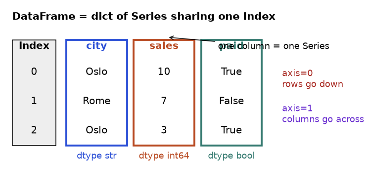
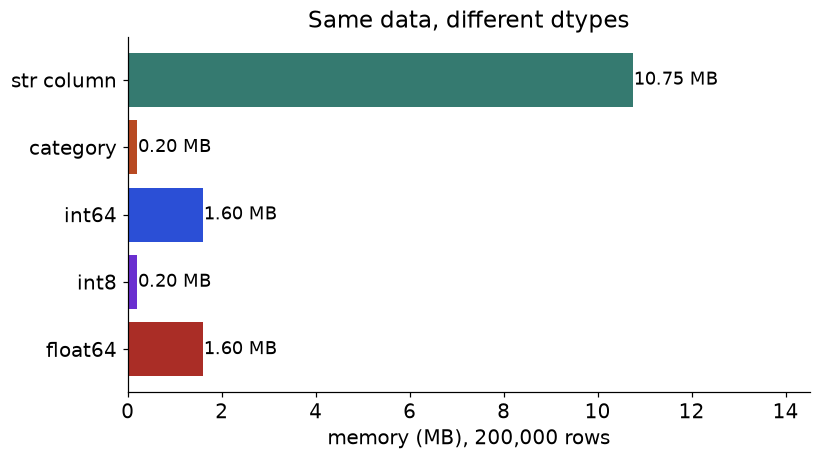
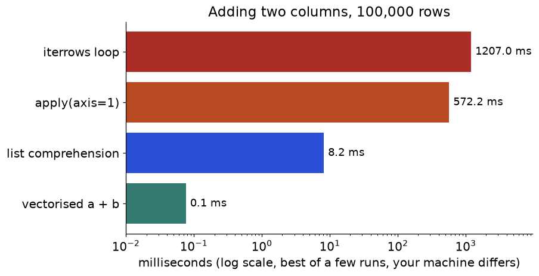
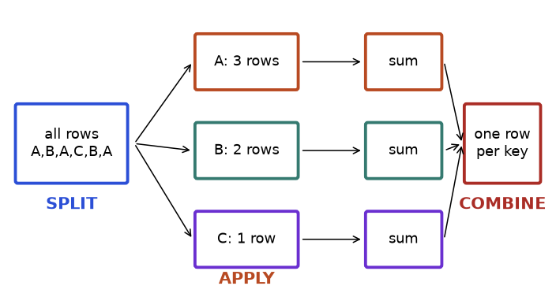
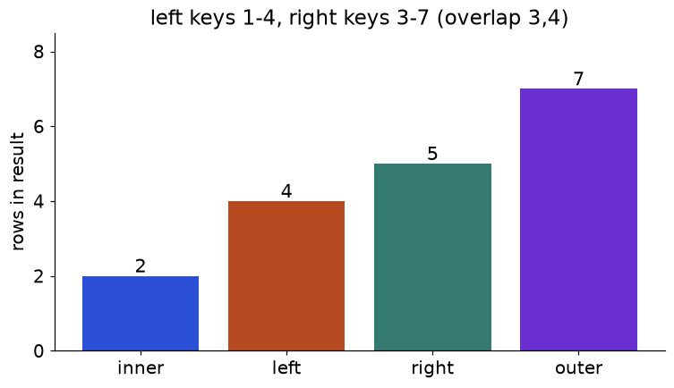
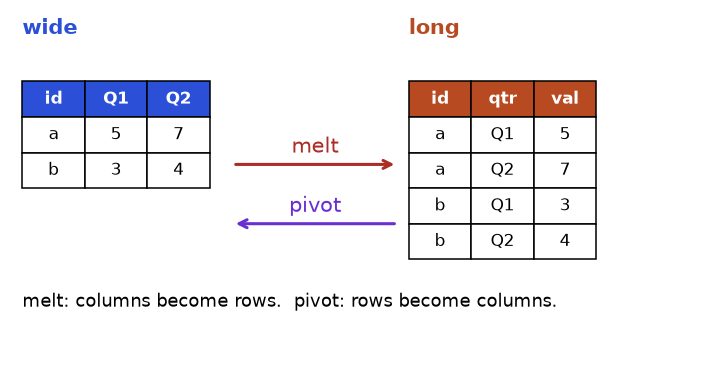
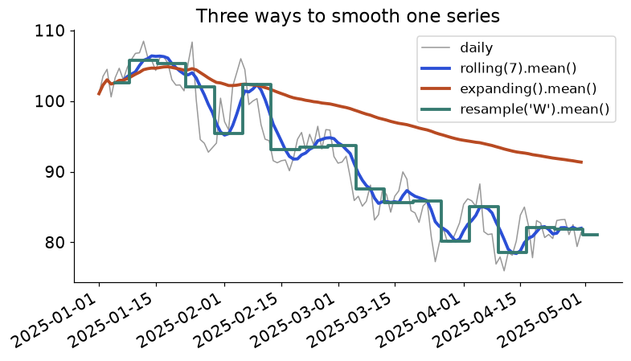
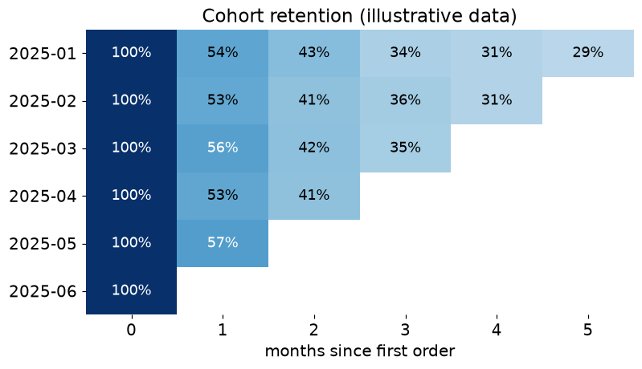

It is Monday morning and the finance team has sent you three files: a CSV of last month's orders (40,000 rows), an Excel sheet with customer regions, and a JSON export from the payment provider. The question sounds simple: "Which regions grew, which customers stopped buying, and do our books match the payment provider?" With plain Python lists and dicts you could answer it, but you would write hundreds of lines and probably get a join wrong. With pandas the whole job is about thirty readable lines. Every analyst, data engineer and data scientist uses it daily, which is why interviews for data roles almost always include a pandas exercise.
This chapter is a practical handbook. It is organised by task: reading files, looking at data, selecting, cleaning, grouping, joining, reshaping, time series, speed. Each area starts with a reference table of the functions you will actually use, then worked examples that climb from trivial to realistic. Every code block runs on its own, and every printed result is the real output from pandas 3.0 on NumPy 2.x. By the end you will be able to solve a new pandas problem methodically instead of by search-and-paste.
Words you need. Vectorised means one call works on a whole column at once, with the loop running in fast compiled code. Index is the set of row labels. dtype is the data type of a column. NaN is "not a number", the usual marker for a missing value. Copy-on-write is the rule (always on in pandas 3.0) that a changed object never silently changes another one.
| Use pandas when | Think twice when |
|---|---|
| Data fits in memory (rule of thumb: comfortably under a quarter of your RAM) | Data is larger than memory: consider Polars (lazy engine), DuckDB (SQL on files) or Spark |
| Tabular data with mixed types: CSV, Excel, JSON, SQL results, Parquet | Pure numeric arrays with no labels: NumPy is simpler and faster |
| Exploration, cleaning, reshaping, joins, group summaries, time series | Heavy row-by-row logic with branching: plain Python or a database may be clearer |
| Glue between files, SQL, plotting and machine-learning libraries | Multi-user transactional storage: use a database |
Install with pip install pandas (add openpyxl for .xlsx files and pyarrow for Parquet; the second is not run here, because we only use what is installed). The universal import convention is import pandas as pd together with import numpy as np. Always check the version, because behaviour changed in 3.0.
import pandas as pd
import numpy as np
print(pd.__version__)
print(np.__version__)
print(pd.options.display.max_rows)3.0.6
2.5.3
60import pandas as pd loads the library under the short name every tutorial uses.import numpy as np is imported alongside because pandas columns are built on NumPy arrays and you will use np.nan, np.where and friends.pd.__version__ prints the version string. Here it is a 3.0 release, so string columns default to the new str dtype and copy-on-write is always on.pd.options holds display and behaviour settings; max_rows is the number of rows printed before pandas truncates with ....
How to read it: the grey box on the left is the Index (row labels 0, 1, 2). Each coloured box is a column, and its dtype is written underneath. Because columns are separate, a DataFrame can mix text, numbers and booleans, but inside one column everything has the same type. Operations align on the Index labels, not on position: that single rule explains most surprising pandas behaviour, including joins, arithmetic between Series and assigning a Series as a new column.
| Name | Plain English | Minimal example |
|---|---|---|
pd.Series(data, index=) | One labelled column | pd.Series([3,5], index=["a","b"]) |
pd.DataFrame(dict) | Table from a dict of columns | pd.DataFrame({"x":[1,2]}) |
pd.DataFrame(list_of_dicts) | Table from records (one dict per row) | pd.DataFrame([{"x":1},{"x":2}]) |
df.shape | (rows, columns) | df.shape |
df.columns | Column labels (an Index) | list(df.columns) |
df.index | Row labels | df.index |
df.dtypes | Type of each column | df.dtypes |
df.values / df.to_numpy() | Plain NumPy array of the data | df.to_numpy() |
s.to_frame() | Series to one-column DataFrame | s.to_frame("n") |
df.set_index("col") | Move a column into the index | df.set_index("id") |
df.reset_index() | Move the index back to a column | df.reset_index(drop=True) |
df.rename(columns=) | Rename columns | df.rename(columns={"a":"b"}) |
df.reindex(new_labels) | Conform to a new index, inserting NaN | s.reindex(["a","z"]) |
df.sort_index() | Sort by labels | df.sort_index() |
df.sort_values(by) | Sort by column values | df.sort_values("x", ascending=False) |
df.T | Transpose | df.T |
df.copy() | Explicit independent copy | df2 = df.copy() |
pd.RangeIndex | Default 0..n-1 index, stored cheaply | pd.RangeIndex(3) |
pd.DatetimeIndex | Index of timestamps (enables time slicing) | pd.date_range("2025-01-01", periods=3) |
idx.is_unique | Does every label appear once? | df.index.is_unique |
pd.concat([..], axis=1) | Glue Series into a DataFrame | pd.concat([a, b], axis=1) |
import pandas as pd
s = pd.Series([10, 7, 3], index=["Oslo", "Rome", "Lima"], name="sales")
print(s)
print(s["Rome"], s.iloc[0])
print(s.index)
print(s.dtype)Oslo 10
Rome 7
Lima 3
Name: sales, dtype: int64
7 10
Index(['Oslo', 'Rome', 'Lima'], dtype='str')
int64name="sales" becomes the column name if the Series is later put in a DataFrame.print(s) shows labels on the left, values on the right, and a footer with the name and dtype.s["Rome"] looks up by label. s.iloc[0] looks up by position. Labels and positions are different things; keep them apart.s.index is an Index object. In pandas 3.0 an index of text has dtype str.s.dtype is int64, the type of the values.import pandas as pd
rows = [
{"city": "Oslo", "sales": 10, "paid": True},
{"city": "Rome", "sales": 7, "paid": False},
{"city": "Oslo", "sales": 3, "paid": True},
]
df = pd.DataFrame(rows)
print(df)
print(df.dtypes)
a = pd.Series([1, 2, 3], index=["x", "y", "z"])
b = pd.Series([10, 20, 30], index=["y", "z", "w"])
print(a + b) city sales paid
0 Oslo 10 True
1 Rome 7 False
2 Oslo 3 True
city str
sales int64
paid bool
dtype: object
w NaN
x NaN
y 12.0
z 23.0
dtype: float64df.dtypes confirms that pandas guessed str, int64 and bool. If a key were missing from some dict, that cell would be NaN.a has labels x, y, z; b has y, z, w.a + b matches by label, not position. Labels y and z exist in both, so they add (12 and 23). Labels x and w exist in only one, so the result is NaN. The ints became floats because NaN needs a float column.import pandas as pd
df = pd.DataFrame({"id": [101, 102, 103], "name": ["Ana", "Bo", "Cy"], "score": [88, 92, 75]})
by_id = df.set_index("id")
print(by_id)
print(by_id.loc[102, "name"])
print(by_id["score"].reindex([101, 999]))
print(by_id.reset_index().columns.tolist())
print(by_id.index.is_unique, df.index) name score
id
101 Ana 88
102 Bo 92
103 Cy 75
Bo
id
101 88.0
999 NaN
Name: score, dtype: float64
['id', 'name', 'score']
True RangeIndex(start=0, stop=3, step=1)id column becomes the index, so loc[102, ...] means "the row whose id is 102".by_id.loc[102, "name"] returns a single value, Bo.reindex([101, 999]) asks for exactly those labels. 999 does not exist, so it gets NaN instead of an error. This is the safe way to "look up and tolerate misses".reset_index() puts id back as an ordinary column at the front.is_unique is worth checking before you rely on an index as a key. df.index shows the default RangeIndex, which stores only start, stop and step, so it costs almost no memory.axis=0 (or "index") means "going down the rows", so df.sum(axis=0) gives one number per column. axis=1 means "going across the columns", so df.sum(axis=1) gives one number per row. Writing the word (axis="columns") is clearer than the digit.| Name | Plain English | Minimal example |
|---|---|---|
pd.read_csv(path) | Load a CSV (path, URL or file-like) | pd.read_csv("a.csv") |
sep= | Field separator | read_csv(p, sep=";") |
usecols= | Load only some columns (saves memory) | read_csv(p, usecols=["id","x"]) |
dtype= | Force column types | read_csv(p, dtype={"zip":"str"}) |
parse_dates= | Parse columns as datetimes | read_csv(p, parse_dates=["when"]) |
na_values= | Extra strings that mean missing | read_csv(p, na_values=["n/a","-"]) |
index_col= | Use a column as the index | read_csv(p, index_col="id") |
nrows= | Read only the first n rows (peek) | read_csv(p, nrows=5) |
skiprows= | Skip junk header lines | read_csv(p, skiprows=2) |
chunksize= | Iterate over the file in pieces | for c in read_csv(p, chunksize=1000): ... |
encoding= | Text encoding | read_csv(p, encoding="latin-1") |
df.to_csv(path, index=False) | Write CSV without the index column | df.to_csv("o.csv", index=False) |
pd.read_excel(path, sheet_name=) | Load a sheet (needs openpyxl) | read_excel("a.xlsx", sheet_name="Q1") |
df.to_excel(path) | Write a sheet | df.to_excel("o.xlsx", index=False) |
pd.ExcelWriter | Write several sheets to one file | with pd.ExcelWriter(p) as w: ... |
pd.read_json(path) | Load JSON (records, columns, lines) | read_json(p, lines=True) |
pd.json_normalize(list) | Flatten nested JSON into columns | json_normalize(data, sep="_") |
df.to_json(orient=) | Write JSON in a chosen shape | df.to_json(orient="records") |
pd.read_parquet / to_parquet | Fast typed columnar format (needs pyarrow; not run here) | df.to_parquet("o.parquet") |
pd.read_sql(query, conn) | Run SQL, get a DataFrame | read_sql("select * from t", conn) |
pd.read_clipboard() | Paste from a spreadsheet (handy, not for pipelines) | pd.read_clipboard() |
io.StringIO(text) | Pretend a string is a file (great for examples) | read_csv(StringIO(txt)) |
import io
import pandas as pd
text = """order_id,customer,amount,placed
1001,ana,25.5,2025-03-01
1002,bo,,2025-03-02
1003,ana,12.0,2025-03-04
"""
df = pd.read_csv(io.StringIO(text))
print(df)
print(df.dtypes) order_id customer amount placed
0 1001 ana 25.5 2025-03-01
1 1002 bo NaN 2025-03-02
2 1003 ana 12.0 2025-03-04
order_id int64
customer str
amount float64
placed str
dtype: objectio.StringIO(text) makes the string behave like an open file, so the example needs no file on disk. With a real file you would write pd.read_csv("orders.csv").NaN, and because NaN is a float, the whole amount column is float64.placed column stays text (str), because we did not ask for dates. That is the most common surprise: pandas does not parse dates unless told.import io
import pandas as pd
text = """zip;customer;amount;placed
01234;ana;1,5;2025-03-01
02345;bo;n/a;2025-03-02
"""
df = pd.read_csv(
io.StringIO(text),
sep=";",
dtype={"zip": "str"},
decimal=",",
na_values=["n/a"],
parse_dates=["placed"],
)
print(df)
print(df.dtypes) zip customer amount placed
0 01234 ana 1.5 2025-03-01
1 02345 bo NaN 2025-03-02
zip str
customer str
amount float64
placed datetime64[us]
dtype: objectsep=";": European exports often use semicolons because commas are decimal marks.dtype={"zip": "str"} keeps the leading zero. Without it, 01234 becomes the integer 1234 and the zero is lost for ever.decimal="," reads 1,5 as the number 1.5.na_values=["n/a"] adds a custom missing marker. pandas already treats empty cells, NA, NaN and null as missing.parse_dates=["placed"] converts the column to datetimes. In pandas 3.0 the unit is chosen automatically (here microseconds, shown as datetime64[us]).import json
import tempfile
from pathlib import Path
import pandas as pd
df = pd.DataFrame({"id": [1, 2], "region": ["north", "south"], "sales": [10.5, 20.0]})
folder = Path(tempfile.mkdtemp())
df.to_csv(folder / "a.csv", index=False)
print((folder / "a.csv").read_text())
df.to_excel(folder / "a.xlsx", sheet_name="Q1", index=False)
print(pd.read_excel(folder / "a.xlsx", sheet_name="Q1"))
payload = [
{"id": 1, "user": {"name": "Ana", "city": "Oslo"}, "items": [{"sku": "A", "qty": 2}, {"sku": "B", "qty": 1}]},
{"id": 2, "user": {"name": "Bo", "city": "Rome"}, "items": [{"sku": "A", "qty": 5}]},
]
print(pd.json_normalize(payload, sep="_").drop(columns="items"))
flat = pd.json_normalize(payload, record_path="items", meta=["id", ["user", "name"]])
print(flat)
print(df.to_json(orient="records"))id,region,sales
1,north,10.5
2,south,20.0
id region sales
0 1 north 10.5
1 2 south 20.0
id user_name user_city
0 1 Ana Oslo
1 2 Bo Rome
sku qty id user.name
0 A 2 1 Ana
1 B 1 1 Ana
2 A 5 2 Bo
[{"id":1,"region":"north","sales":10.5},{"id":2,"region":"south","sales":20.0}]tempfile.mkdtemp() gives a throwaway folder so the example leaves nothing behind.to_csv(..., index=False) writes only your columns. Forgetting index=False adds an unnamed first column, which then comes back as Unnamed: 0 when you reload.to_excel and read_excel use the installed openpyxl engine. The sheet name is how you pick one sheet out of many.json_normalize(payload, sep="_") flattens nested dicts: user becomes user_name and user_city. The list column items stays as a list, so we drop it for display.record_path="items" explodes the nested list into one row per item, and meta=[...] copies parent fields onto each row. This is the standard way to turn "orders with line items" JSON into a flat table.to_json(orient="records") writes a list of row dicts, the shape most APIs expect.dtype=str. Fix it at read time; repairing later with zfill only works if you know the original width.| Name | Plain English | Minimal example |
|---|---|---|
df.head(n) / tail(n) | First or last n rows | df.head(3) |
df.sample(n, random_state=) | Random rows (reproducible with a seed) | df.sample(5, random_state=0) |
df.shape | Rows and columns | df.shape |
df.info() | Columns, non-null counts, dtypes, memory | df.info() |
df.describe() | Summary stats of numeric columns | df.describe() |
df.describe(include="all") | Also text and dates | df.describe(include="all") |
s.value_counts() | Frequency table of a column | df["city"].value_counts() |
value_counts(normalize=True) | Shares instead of counts | s.value_counts(normalize=True) |
s.nunique() | Number of distinct values | df["id"].nunique() |
s.unique() | The distinct values themselves | df["city"].unique() |
df.isna().sum() | Missing count per column | df.isna().sum() |
df.duplicated().sum() | Number of repeated rows | df.duplicated().sum() |
df.memory_usage(deep=True) | Bytes per column (deep counts text) | df.memory_usage(deep=True) |
df.select_dtypes(include=) | Pick columns by dtype | df.select_dtypes("number") |
df.corr(numeric_only=True) | Correlation matrix | df.corr(numeric_only=True) |
s.min() / max() / mean() / median() | Basic aggregates | df["x"].median() |
s.quantile(q) | Percentile | s.quantile([.25,.75]) |
s.idxmax() / idxmin() | Index label of the biggest or smallest | s.idxmax() |
df.nlargest(n, col) | Top n rows by a column | df.nlargest(3, "sales") |
df.agg(["min","max"]) | Several aggregates at once | df.agg(["min","max"]) |
pd.set_option | Display settings | pd.set_option("display.max_columns", 50) |
Whenever a new table arrives, run the same checks in the same order: size, types, missing, duplicates, ranges, categories. It catches 90 percent of data problems before they become wrong answers.
import numpy as np
import pandas as pd
rng = np.random.default_rng(42)
n = 12
df = pd.DataFrame({
"order_id": np.arange(1, n + 1),
"city": rng.choice(["Oslo", "Rome", "Lima"], n),
"amount": rng.normal(50, 20, n).round(2),
})
df.loc[3, "amount"] = np.nan
df = pd.concat([df, df.iloc[[0]]], ignore_index=True)
print(df.shape)
df.info()
print(df.describe().round(2))
print(df["city"].value_counts())
print(df.isna().sum().to_dict(), df.duplicated().sum())(13, 3)
<class 'pandas.DataFrame'>
RangeIndex: 13 entries, 0 to 12
Data columns (total 3 columns):
# Column Non-Null Count Dtype
--- ------ -------------- -----
0 order_id 13 non-null int64
1 city 13 non-null str
2 amount 12 non-null float64
dtypes: float64(1), int64(1), str(1)
memory usage: 444.0 bytes
order_id amount
count 13.00 12.00
mean 6.08 52.99
std 3.77 12.84
min 1.00 30.82
25% 3.00 48.16
50% 6.00 52.56
75% 9.00 60.90
max 12.00 72.54
city
Oslo 5
Lima 4
Rome 4
Name: count, dtype: int64
{'order_id': 0, 'city': 0, 'amount': 1} 1default_rng(42) makes the "random" data identical every run.df.loc[3, "amount"] = np.nan plants one missing value, and concat with df.iloc[[0]] appends a copy of the first row, so we have a duplicate to find.df.shape is a tuple: 13 rows, 3 columns.df.info() prints directly (it returns None, so do not wrap it in print). Read the "Non-Null Count" column: 12 of 13 for amount reveals the missing cell.describe() gives count, mean, std, min, quartiles and max. Check that min and max are plausible: negative amounts or a max of 10 million are red flags.value_counts() shows how many rows per city; a misspelling like "oslo" would appear as its own row here.isna().sum() counts missing cells per column, and duplicated().sum() counts rows that repeat an earlier row exactly.| Name | Plain English | Minimal example |
|---|---|---|
df["col"] | One column as a Series | df["city"] |
df[["a","b"]] | Several columns as a DataFrame | df[["city","sales"]] |
df.loc[rows, cols] | Select by label (end of a slice is included) | df.loc[0:2, "city"] |
df.iloc[rows, cols] | Select by position (end excluded) | df.iloc[0:2, 0] |
df.at[r, c] / df.iat[i, j] | Fast single value by label / position | df.at[0, "city"] |
df[mask] | Rows where a Boolean Series is True | df[df["sales"] > 5] |
& | ~ | and, or, not on masks (brackets required) | (a > 1) & (b < 3) |
s.isin(values) | Membership test | df["city"].isin(["Oslo","Rome"]) |
s.between(lo, hi) | Range test (inclusive by default) | df["sales"].between(5, 10) |
s.str.contains(pat) | Text pattern test | df["city"].str.contains("os") |
s.isna() / notna() | Missing tests | df[df["x"].notna()] |
df.query("expr") | Filter with a readable string | df.query("sales > 5 and city == 'Oslo'") |
query("@var") | Use a Python variable inside query | df.query("sales > @cut") |
df.filter(items/like/regex) | Select columns by name pattern | df.filter(like="amt") |
df.drop(columns=) | Remove columns | df.drop(columns=["tmp"]) |
df.drop(index=) | Remove rows by label | df.drop(index=[0, 3]) |
df.loc[mask, "col"] = v | Assign into selected cells | df.loc[df.x < 0, "x"] = 0 |
df.where(cond, other) | Keep where True, else replace | df["x"].where(df.x > 0, 0) |
np.where(cond, a, b) | Vectorised if/else | np.where(df.x > 0, "pos", "neg") |
df.take / df.xs | Positional take / cross-section of a MultiIndex | df.xs("Oslo", level="city") |
df.nsmallest / nlargest | Top or bottom n rows | df.nlargest(2, "sales") |
df.head(n) / df.iloc[:n] | First n rows | df.iloc[:5] |
df.sort_values().head() | Top n by sorting | df.sort_values("x").head(3) |
import pandas as pd
df = pd.DataFrame(
{"city": ["Oslo", "Rome", "Lima", "Oslo"], "sales": [10, 7, 3, 12]},
index=[10, 11, 12, 13],
)
print(df["city"].tolist())
print(df.loc[11, "sales"])
print(df.iloc[1, 1])
print(df.loc[10:12, "city"].tolist())
print(df.iloc[0:2].index.tolist())['Oslo', 'Rome', 'Lima', 'Oslo']
7
7
['Oslo', 'Rome', 'Lima']
[10, 11]df["city"] returns a Series; .tolist() turns it into a plain list so the print is short.df.loc[11, "sales"] means "the row labelled 11, column sales", which is 7.df.iloc[1, 1] means "second row, second column" by position. It is also 7 here because label 11 sits in position 1.loc[10:12] is a label slice and includes the end label 12, so three rows come back.iloc[0:2] is a position slice and excludes the end, so two rows come back, with labels 10 and 11.loc[0:2] returns three rows, iloc[0:2] returns two. And with a non-default index, s[0] no longer falls back to position in pandas 3.0: it raises a KeyError. Say loc or iloc every time.import pandas as pd
df = pd.DataFrame({
"city": ["Oslo", "Rome", "Lima", "Oslo", "Rome"],
"sales": [10, 7, 3, 12, 9],
"paid": [True, False, True, True, False],
})
mask = (df["sales"] > 5) & df["paid"]
print(mask.tolist())
print(df[mask])
print(df[df["city"].isin(["Rome", "Lima"]) | (df["sales"] > 11)])
print(df[~df["paid"]]["sales"].sum())
cut = 8
print(df.query("sales > @cut and city != 'Rome'"))[True, False, False, True, False]
city sales paid
0 Oslo 10 True
3 Oslo 12 True
city sales paid
1 Rome 7 False
2 Lima 3 True
3 Oslo 12 True
4 Rome 9 False
16
city sales paid
0 Oslo 10 True
3 Oslo 12 True& combines them element by element. Every comparison needs its own brackets because & binds tighter than >.paid is already Boolean, so it works as a mask on its own.df[mask] keeps the rows where the mask is True and keeps their original labels (0 and 3).| (or) with isin: rows in Rome or Lima, or with sales above 11.~df["paid"] flips True and False, selecting the unpaid rows (sales 7 and 9, total 16).query takes the condition as a string, which reads like SQL. @cut pulls in the Python variable. Use and/or inside query, but &/| outside it.df[(df.a > 1) and (df.b < 2)] raises "The truth value of a Series is ambiguous". Python's and wants one True or False, but a Series holds many. Use &, |, ~ with brackets.import numpy as np
import pandas as pd
df = pd.DataFrame({"x": [-5, 2, -1, 8], "grp": ["a", "b", "a", "b"]})
df.loc[df["x"] < 0, "x"] = 0
print(df["x"].tolist())
df["sign"] = np.where(df["x"] > 0, "pos", "zero")
df["capped"] = df["x"].where(df["x"] < 5, 5)
df["label"] = np.select([df["x"] == 0, df["x"] < 5], ["none", "low"], default="high")
print(df)[0, 2, 0, 8]
x grp sign capped label
0 0 a zero 0 none
1 2 b pos 2 low
2 0 a zero 0 none
3 8 b pos 5 highdf.loc[mask, "x"] = 0 changes only the cells where the mask is True. This one-step form is the safe way to assign into a selection.np.where(cond, a, b) builds a whole new column: "pos" where x is positive, else "zero".Series.where(cond, other) keeps values where the condition is True and replaces the rest. Here it caps x at 5.np.select(conditions, choices, default) handles more than two outcomes. The conditions are checked in order and the first True wins, so x == 0 is tested before x < 5.| Name | Plain English | Minimal example |
|---|---|---|
df["new"] = ... | Add or overwrite a column in place | df["tax"] = df.price * 0.2 |
df.assign(new=...) | Return a new frame with extra columns (chainable) | df.assign(tax=lambda d: d.price*.2) |
df.insert(pos, name, vals) | Add a column at a chosen position | df.insert(0, "k", 1) |
df.rename(columns=) | Rename | df.rename(columns=str.lower) |
df.astype(dict) | Convert types | df.astype({"id": "int32"}) |
pd.to_numeric(s, errors=) | Parse numbers; "coerce" turns junk into NaN | pd.to_numeric(s, errors="coerce") |
pd.to_datetime(s, format=) | Parse dates | pd.to_datetime(s, format="%d/%m/%Y") |
s.astype("category") | Few distinct values, stored as codes | df["city"].astype("category") |
pd.Categorical(values, categories, ordered) | Ordered categories (S < M < L) | pd.Categorical(["S"], ["S","M"], ordered=True) |
"Int64", "Float64", "boolean" | Nullable dtypes that hold pd.NA without turning to float | s.astype("Int64") |
"string[pyarrow]" / "str" | Text dtypes (default str in 3.0) | s.astype("str") |
df.convert_dtypes() | Switch to best nullable dtypes | df.convert_dtypes() |
df.infer_objects() | Re-guess dtypes of object columns | df.infer_objects() |
pd.api.types.is_numeric_dtype | Type check helpers | is_numeric_dtype(df.x) |
s.replace(old, new) | Swap values | s.replace({"N":"No"}) |
s.map(dict_or_func) | Look up each value | s.map({"a": 1}) |
s.clip(lo, hi) | Limit to a range | s.clip(0, 100) |
s.round(n) | Round | s.round(2) |
s.diff() / pct_change() | Change vs previous row | s.pct_change() |
s.cumsum() / cummax() | Running total / maximum | s.cumsum() |
s.rank() | Rank values | s.rank(ascending=False) |
s.shift(k) | Move values down by k | s.shift(1) |
import pandas as pd
df = pd.DataFrame({"item": ["pen", "book", "lamp"], "price": [2.0, 12.5, 30.0], "qty": [10, 2, 1]})
df["total"] = df["price"] * df["qty"]
print(df)
priced = df.assign(vat=lambda d: (d["total"] * 0.2).round(2), big=lambda d: d["total"] > 20)
print(priced[["item", "vat", "big"]])
print(list(df.columns)) item price qty total
0 pen 2.0 10 20.0
1 book 12.5 2 25.0
2 lamp 30.0 1 30.0
item vat big
0 pen 4.0 False
1 book 5.0 True
2 lamp 6.0 True
['item', 'price', 'qty', 'total']df["total"] = ... adds the column to df itself.assign returns a new DataFrame and leaves df alone. The lambda d: ... receives the frame as it is at that moment, so a later argument can use a column created by an earlier one.df has no vat or big: assign did not change it.import pandas as pd
raw = pd.Series(["12", "7", "oops", "30", None])
nums = pd.to_numeric(raw, errors="coerce")
print(nums.tolist())
ints = nums.astype("Int64")
print(ints.tolist(), ints.dtype)
size = pd.Series(["M", "S", "L", "M", "S"])
cat = pd.Series(pd.Categorical(size, categories=["S", "M", "L"], ordered=True))
print(cat.dtype, (cat >= "M").tolist())
print(cat.sort_values().tolist(), cat.cat.codes.tolist())
dates = pd.to_datetime(pd.Series(["03/04/2025", "15/04/2025"]), format="%d/%m/%Y")
print(dates.dt.month.tolist(), dates.dtype)[12.0, 7.0, nan, 30.0, nan]
[12, 7, <NA>, 30, <NA>] Int64
category [True, False, True, True, False]
['S', 'S', 'M', 'M', 'L'] [1, 0, 2, 1, 0]
[4, 4] datetime64[us]to_numeric(..., errors="coerce") turns "oops" and the missing value into NaN instead of crashing. The default errors="raise" is better when you want to be told about bad data.astype("Int64") (capital I) is the nullable integer: it keeps integers as integers and shows the gap as <NA>. The plain int64 cannot hold a missing value.Categorical knows S < M < L, so comparisons (>= "M") and sorting follow that order, not the alphabet (where L would come before M).cat.cat.codes are the small integers pandas actually stores: S=0, M=1, L=2. That is why categories save memory.format= to to_datetime for non-ISO dates. "03/04/2025" is 3 April in Europe but 4 March in the US, and guessing is how silent bugs are born.
How to read it: each bar is one column of 200,000 values. The text column built from four repeated words is the longest bar. Converting it to category stores each word once plus a small integer code per row, so the bar shrinks a lot. For numbers, shrinking int64 to int8 divides memory by eight when values fit between -128 and 127. The lesson: low-cardinality text becomes category, and numbers get the smallest safe type.
import numpy as np
import pandas as pd
rng = np.random.default_rng(0)
n = 200_000
city = pd.Series(rng.choice(["Oslo", "Rome", "Lima", "Kyiv"], n))
qty = pd.Series(rng.integers(0, 100, n))
print(round(city.memory_usage(deep=True) / 1e6, 2), "MB as str")
print(round(city.astype("category").memory_usage(deep=True) / 1e6, 2), "MB as category")
print(round(qty.memory_usage(deep=True) / 1e6, 2), "MB int64")
print(round(qty.astype("int8").memory_usage(deep=True) / 1e6, 2), "MB int8")
print(qty.astype("int8").max(), np.iinfo("int8").max)10.6 MB as str
0.2 MB as category
1.6 MB int64
0.2 MB int8
99 127default_rng(0) makes it repeatable.memory_usage(deep=True) measures real bytes including the text; without deep=True pandas under-counts text columns.np.iinfo("int8").max (127). If a value did not fit, the conversion would silently wrap or raise; always check the range first, or use pd.to_numeric(s, downcast="integer") which picks a safe size for you.category. It cuts memory and speeds up groupby. If the column is nearly all unique (ids, free text), keep it as str.| Name | Plain English | Minimal example |
|---|---|---|
df.isna() / notna() | Boolean map of missing cells | df.isna() |
df.isna().sum() | Missing per column | df.isna().sum() |
df.isna().mean() | Share missing per column | df.isna().mean().round(2) |
df.dropna() | Drop rows with any missing value | df.dropna() |
dropna(subset=) | Only look at some columns | df.dropna(subset=["id"]) |
dropna(how="all") | Drop only fully empty rows | df.dropna(how="all") |
dropna(thresh=k) | Keep rows with at least k real values | df.dropna(thresh=2) |
fillna(value) | Fill with a constant | df["x"].fillna(0) |
fillna(df.mean()) | Fill each column with its own value | df.fillna(df.mean(numeric_only=True)) |
ffill() / bfill() | Carry the last / next value | s.ffill() |
interpolate() | Estimate between neighbours | s.interpolate() |
groupby().transform("median") | Fill with a group-specific statistic | g.transform("median") |
replace(value, np.nan) | Turn sentinels such as -999 into NaN | df.replace(-999, np.nan) |
pd.NA | The missing marker of nullable dtypes | pd.Series([1, None], dtype="Int64") |
df.duplicated(subset, keep) | Mark repeated rows | df.duplicated(["id"], keep=False) |
df.drop_duplicates(subset, keep) | Remove repeated rows | df.drop_duplicates("id", keep="last") |
s.is_unique | Is every value distinct? | df["id"].is_unique |
s.value_counts(dropna=False) | Count missing as a category too | s.value_counts(dropna=False) |
df.sort_values().drop_duplicates() | Keep the best row per key | df.sort_values("ts").drop_duplicates("id", keep="last") |
import numpy as np
import pandas as pd
df = pd.DataFrame({"id": [1, 2, 3, 4], "age": [25, np.nan, 40, np.nan], "city": ["Oslo", "Rome", None, "Lima"]})
print(df.isna().sum().to_dict())
print(df.dropna().shape)
print(df.dropna(subset=["city"]).shape)
filled = df.assign(age=df["age"].fillna(df["age"].median()), city=df["city"].fillna("unknown"))
print(filled){'id': 0, 'age': 2, 'city': 1}
(1, 3)
(3, 3)
id age city
0 1 25.0 Oslo
1 2 32.5 Rome
2 3 40.0 unknown
3 4 32.5 Limaisna().sum() counts missing cells: 2 in age, 1 in city.dropna() with no arguments removes every row that has any gap. Rows 1 and 3 lack an age and row 2 lacks a city, so only row 0 survives: the shape is (1, 3).subset=["city"] only cares about city, so rows with a missing age are kept and only row 2 is dropped: (3, 3).import numpy as np
import pandas as pd
df = pd.DataFrame({
"dept": ["a", "a", "b", "b", "b"],
"pay": [100.0, np.nan, 200.0, -999.0, np.nan],
})
df["pay"] = df["pay"].replace(-999, np.nan)
df["pay_filled"] = df["pay"].fillna(df.groupby("dept")["pay"].transform("median"))
print(df)
ts = pd.Series([1.0, np.nan, np.nan, 4.0, np.nan])
print(ts.ffill().tolist())
print(ts.interpolate().tolist()) dept pay pay_filled
0 a 100.0 100.0
1 a NaN 100.0
2 b 200.0 200.0
3 b NaN 200.0
4 b NaN 200.0
[1.0, 1.0, 1.0, 4.0, 4.0]
[1.0, 2.0, 3.0, 4.0, 4.0]replace(-999, np.nan) converts the sentinel to a real missing marker first.groupby("dept")["pay"].transform("median") returns a Series the same length as df in which each row holds the median of its own department (100 for a, 200 for b).fillna(that_series) fills each gap with the matching department median. This is better than one global median because departments differ.ffill() carries the last known value forward (1, 1, 1, 4, 4): right for state that persists, such as a price.interpolate() draws a straight line between known points (1, 2, 3, 4, then 4 at the end because nothing follows): right for smooth measurements such as temperature.df["age_missing"] = df["age"].isna()) when missingness itself carries information.import pandas as pd
df = pd.DataFrame({
"id": [1, 1, 2, 3, 3],
"ts": ["2025-01-01", "2025-01-05", "2025-01-02", "2025-01-03", "2025-01-03"],
"val": [10, 12, 7, 5, 5],
})
print(df.duplicated().tolist())
print(df.duplicated("id", keep=False).tolist())
latest = df.sort_values("ts").drop_duplicates("id", keep="last")
print(latest.sort_values("id"))
print(df.drop_duplicates().shape[0])[False, False, False, False, True]
[True, True, False, True, True]
id ts val
1 1 2025-01-05 12
2 2 2025-01-02 7
4 3 2025-01-03 5
4duplicated() with no arguments compares whole rows. Only the last row repeats an earlier one exactly, so only it is True.duplicated("id", keep=False) compares only the key and marks every row that shares an id (keep=False), which is what you want when you need to inspect all conflicting versions.drop_duplicates("id", keep="last"). Order matters; without the sort, "last" means last in file order.| Name | Plain English | Minimal example |
|---|---|---|
s.str.lower() / upper() / title() | Change case | s.str.lower() |
s.str.strip() | Trim spaces at both ends | s.str.strip() |
s.str.replace(pat, repl, regex=) | Replace text | s.str.replace(r"\D", "", regex=True) |
s.str.contains(pat) | Boolean pattern match | s.str.contains("^A") |
s.str.startswith / endswith | Prefix and suffix test | s.str.endswith(".csv") |
s.str.split(sep, expand=True) | Split into columns | s.str.split(" ", expand=True) |
s.str.extract(regex) | Pull capture groups into columns | s.str.extract(r"(\d+)") |
s.str.len() | String length | s.str.len() |
s.str.cat(sep=) | Join strings | s.str.cat(sep=", ") |
s.str.get_dummies(sep) | One-hot from delimited tags | s.str.get_dummies("|") |
s.str.zfill(w) | Left-pad with zeros | s.str.zfill(5) |
s.dt.year / month / day | Date parts | s.dt.month |
s.dt.dayofweek / day_name() | Weekday (Monday = 0) | s.dt.day_name() |
s.dt.to_period("M") | Month bucket (as Period) | s.dt.to_period("M") |
s.dt.floor("h") / ceil / round | Snap to a unit | s.dt.floor("D") |
s.dt.normalize() | Drop the time of day | s.dt.normalize() |
s.dt.strftime(fmt) | Format as text | s.dt.strftime("%Y-%m") |
s.dt.tz_localize / tz_convert | Attach and change time zone | s.dt.tz_localize("UTC") |
pd.Timedelta / s.dt.days | Durations | (b - a).dt.days |
pd.date_range(start, periods, freq) | Regular calendar | pd.date_range("2025-01-01", periods=3, freq="D") |
pd.offsets.MonthEnd | Calendar arithmetic | s + pd.offsets.MonthEnd(0) |
s.map(func_or_dict) | Element-wise on a Series | s.map({"a": 1}) |
df.apply(f, axis=) | Run a function per column or per row | df.apply(f, axis=1) |
df.map(f) | Element-wise on a whole DataFrame (replaces applymap) | df.map(len) |
import pandas as pd
names = pd.Series([" Ana Silva ", "BO chen", "cy O'Neil"])
clean = names.str.strip().str.title()
print(clean.tolist())
parts = clean.str.split(" ", n=1, expand=True)
parts.columns = ["first", "last"]
print(parts)
print(clean.str.contains("an", case=False).tolist())
print(clean.str.len().tolist())['Ana Silva', 'Bo Chen', "Cy O'Neil"]
first last
0 Ana Silva
1 Bo Chen
2 Cy O'Neil
[True, False, False]
[9, 7, 9].str is an accessor: it applies a text method to every element of the column. You chain methods: strip first, then title-case.title() capitalises each word; it handles these three names, but it turns "mcdonald" into "Mcdonald", so check on your real data.split(" ", n=1, expand=True) splits at the first space only and returns a DataFrame with one column per piece; we then name them.contains("an", case=False) tests for the substring ignoring case: True for "Ana Silva", False for the others.len() counts characters (after cleaning, so the spaces are gone).import pandas as pd
log = pd.DataFrame({
"line": ["ERR 2025-03-07 14:05 code=502", "OK 2025-03-08 09:30 code=200", "ERR 2025-03-09 23:59 code=404"],
})
ex = log["line"].str.extract(r"^(?P<level>\w+) (?P<when>[\d-]+ [\d:]+) code=(?P<code>\d+)$")
ex["when"] = pd.to_datetime(ex["when"])
ex["code"] = ex["code"].astype(int)
print(ex)
print(ex["when"].dt.day_name().tolist())
ex["day"] = ex["when"].dt.normalize()
ex["hour"] = ex["when"].dt.hour
print(ex[["day", "hour"]])
gap = ex["when"].diff()
print(gap.dt.total_seconds().div(3600).round(1).tolist()) level when code
0 ERR 2025-03-07 14:05:00 502
1 OK 2025-03-08 09:30:00 200
2 ERR 2025-03-09 23:59:00 404
['Friday', 'Saturday', 'Sunday']
day hour
0 2025-03-07 14
1 2025-03-08 9
2 2025-03-09 23
[nan, 19.4, 38.5]str.extract takes a regular expression with named groups (?P<name>...) and returns one column per group. Rows that do not match become NaN.to_datetime for the timestamp and astype(int) for the code..dt is the date accessor, the twin of .str. day_name() gives weekday names (7 March 2025 was a Friday).normalize() sets the time to midnight, which is the easiest way to get a "date" key for grouping; hour is an integer part.diff() on a datetime column gives a Timedelta between consecutive rows. total_seconds() converts to seconds, and dividing by 3600 gives hours. The first gap is NaN because no row precedes it.The same task, "total = price times quantity", can be written four ways. They give the same answer at very different cost.
import numpy as np
import pandas as pd
rng = np.random.default_rng(0)
df = pd.DataFrame({"price": rng.uniform(1, 10, 5), "qty": rng.integers(1, 5, 5)})
a = df["price"] * df["qty"]
b = df.apply(lambda r: r["price"] * r["qty"], axis=1)
c = pd.Series([p * q for p, q in zip(df["price"], df["qty"])])
d = pd.Series([r.price * r.qty for r in df.itertuples()])
print(np.allclose(a, b), np.allclose(a, c), np.allclose(a, d))
print(a.round(2).tolist())
tier = pd.Series([1, 2, 3, 1, 4]).map({1: "single", 2: "pair"}).fillna("bulk")
print(tier.tolist())True True True
[20.2, 13.71, 4.11, 3.45, 33.28]
['single', 'pair', 'bulk', 'single', 'bulk']a is vectorised: one multiplication of two whole columns, executed in compiled code. This is the default choice.b uses apply(axis=1), which builds a Series object for every row and calls your Python function once per row. It is the slowest and the most overused.c is a list comprehension over zip of two columns. It is a Python loop but avoids row objects, so it is typically much faster than apply(axis=1) and is a good fallback for logic that cannot be vectorised.d uses itertuples(), the right way to loop over rows if you must (much faster than iterrows).np.allclose checks that all four agree. The timings are in the figure below.Series.map(dict) is the vectorised way to recode values. Anything not in the dict becomes NaN, which we fill with "bulk".
How to read it: the horizontal axis is logarithmic, so each gridline is ten times larger than the one before. The vectorised bar is orders of magnitude shorter than the two row-wise approaches. The gap grows with the number of rows. Reach for apply(axis=1) only after you have tried column arithmetic, np.where, np.select, map and the .str/.dt accessors.

How to read it: follow the arrows left to right. The blue box holds all rows. They are split by key into three boxes, a function (here sum) runs inside each box independently, and the three small results are combined into the final table with one row per key. agg shrinks each group to one row. transform returns one value for every original row. filter keeps or drops whole groups.
| Name | Plain English | Minimal example |
|---|---|---|
df.groupby("k") | Create the groups (nothing computed yet) | g = df.groupby("city") |
g["x"].sum() / mean() / count() | Built-in per-group stats | g["sales"].sum() |
g.size() | Rows per group (counts NaN too) | g.size() |
g.count() | Non-null values per column per group | g.count() |
g.nunique() | Distinct values per group | g["user"].nunique() |
g.agg({"x": ["sum","mean"]}) | Several stats per column | g.agg({"x": ["sum","mean"]}) |
g.agg(total=("x","sum")) | Named aggregation: clear output names | g.agg(total=("sales","sum")) |
g.agg(func) | Custom function per group | g["x"].agg(lambda s: s.max()-s.min()) |
g.transform("mean") | Group stat broadcast to every row | g["x"].transform("mean") |
g.filter(func) | Keep only groups that pass a test | g.filter(lambda d: len(d) > 2) |
g.apply(func) | Flexible per-group function (slowest) | g.apply(lambda d: d.nlargest(2, "x")) |
g.head(n) / tail(n) | First n rows of each group | g.head(2) |
g.nth(k) | k-th row of each group | g.nth(0) |
g.cumcount() | 0,1,2... within each group | g.cumcount() |
g.rank() | Rank within group | g["x"].rank(ascending=False) |
g.cumsum() / shift() / diff() | Running/lagged values within group | g["x"].shift(1) |
g.first() / last() | First/last non-null per group | g.last() |
g.idxmax() | Row label of the max per group | g["x"].idxmax() |
groupby(["a","b"]) | Group by several keys | df.groupby(["city","year"]) |
groupby(..., as_index=False) | Keys stay as ordinary columns | df.groupby("k", as_index=False).sum() |
groupby(..., dropna=False) | Keep a NaN group | df.groupby("k", dropna=False) |
groupby(..., observed=) | For categorical keys: show unused categories? (default True in 3.0) | groupby("cat", observed=False) |
groupby(pd.Grouper(key, freq)) | Group a date column by period | pd.Grouper(key="ts", freq="W") |
g.ngroups / g.groups | Number of groups / their row labels | g.ngroups |
g.get_group(key) | Pull one group out | g.get_group("Oslo") |
g.describe() | Summary statistics per group | g["x"].describe() |
import pandas as pd
df = pd.DataFrame({
"city": ["Oslo", "Rome", "Oslo", "Lima", "Rome", "Oslo"],
"sales": [10, 7, 3, 5, 9, 12],
})
print(df.groupby("city")["sales"].sum())
print(df.groupby("city")["sales"].agg(["count", "mean", "max"]))
print(df.groupby("city", as_index=False)["sales"].sum())city
Lima 5
Oslo 25
Rome 16
Name: sales, dtype: int64
count mean max
city
Lima 1 5.000000 5
Oslo 3 8.333333 12
Rome 2 8.000000 9
city sales
0 Lima 5
1 Oslo 25
2 Rome 16groupby("city") says "split by city". ["sales"] selects the column to summarise and .sum() adds within each group. Oslo: 10+3+12 = 25. Groups are sorted by key by default.agg computes several statistics at once; each becomes a column.as_index=False keeps city as an ordinary column instead of the index, which is easier to merge or plot afterwards.import pandas as pd
df = pd.DataFrame({
"city": ["Oslo", "Rome", "Oslo", "Lima", "Rome", "Oslo"],
"channel": ["web", "web", "shop", "web", "shop", "web"],
"sales": [10, 7, 3, 5, 9, 12],
})
summary = df.groupby("city").agg(
orders=("sales", "size"),
total=("sales", "sum"),
best=("sales", "max"),
channels=("channel", "nunique"),
)
print(summary)
df["share_of_city"] = (df["sales"] / df.groupby("city")["sales"].transform("sum")).round(2)
df["vs_city_mean"] = df["sales"] - df.groupby("city")["sales"].transform("mean")
print(df)
big = df.groupby("city").filter(lambda d: len(d) >= 2)
print(sorted(big["city"].unique())) orders total best channels
city
Lima 1 5 5 1
Oslo 3 25 12 2
Rome 2 16 9 2
city channel sales share_of_city vs_city_mean
0 Oslo web 10 0.40 1.666667
1 Rome web 7 0.44 -1.000000
2 Oslo shop 3 0.12 -5.333333
3 Lima web 5 1.00 0.000000
4 Rome shop 9 0.56 1.000000
5 Oslo web 12 0.48 3.666667
['Oslo', 'Rome']output_name=(column, function). It gives flat, readable column names, so prefer it over the dict-of-lists form which creates a two-level header.size counts rows, nunique counts distinct channels. Lima has one order and one channel.transform("sum") returns a Series aligned to the original rows: each Oslo row sees 25. Dividing gives each row's share of its city total.sales - transform("mean") centres each value on its group mean: a common feature-engineering step.filter receives each group as a small DataFrame and returns True to keep it. Lima has only one row, so it is dropped; Oslo and Rome stay.Problem 17.9.1 For the table above, find the city whose average sale is highest, using one chain.
| Idea | Group by city, take the mean of sales, then pick the label of the largest mean. |
|---|---|
| Code | df.groupby("city")["sales"].mean().idxmax() |
| By hand | Oslo (10+3+12)/3 = 8.33, Rome (7+9)/2 = 8.0, Lima 5/1 = 5.0. |
| Answer | Oslo. idxmax() returns the label (the city), whereas max() would return the number 8.33. |
import pandas as pd
df = pd.DataFrame({
"dept": ["a", "a", "a", "b", "b", "b"],
"emp": ["u1", "u2", "u3", "u4", "u5", "u6"],
"pay": [50, 80, 65, 90, 40, 70],
})
top2 = df.sort_values("pay", ascending=False).groupby("dept").head(2)
print(top2.sort_values(["dept", "pay"], ascending=[True, False]))
df["rank"] = df.groupby("dept")["pay"].rank(ascending=False, method="first").astype(int)
print(df[df["rank"] == 1][["dept", "emp"]])
spread = df.groupby("dept")["pay"].agg(lambda s: s.max() - s.min())
print(spread.to_dict())
print(df.groupby("dept")["pay"].agg(["min", "max"]).assign(spread=lambda d: d["max"] - d["min"])["spread"].to_dict()) dept emp pay
1 a u2 80
2 a u3 65
3 b u4 90
5 b u6 70
dept emp
1 a u2
3 b u4
{'a': 30, 'b': 50}
{'a': 30, 'b': 50}groupby("dept").head(2) is the fast idiom for top-N per group. head is implemented without calling Python per group.sort_values is only for tidy display.rank(ascending=False, method="first") numbers pay within each department; ties get distinct ranks in order of appearance. Filtering rank == 1 gives the top earner per department. Ranks are floats, hence astype(int).agg(lambda ...) calls your Python function once per group: simple and flexible, but slower for many groups.min, max, then subtract). Prefer built-in aggregations whenever possible; they run in compiled code.
How to read it: each bar is the number of rows after a join. inner keeps only matching keys (2). left keeps all four left keys (4). right keeps all five right keys (5). outer keeps every key from either side (7). The row count is the quickest sanity check: if your left join returns more rows than the left table had, the right table had duplicate keys.
| Name | Plain English | Minimal example |
|---|---|---|
pd.merge(a, b, on="k") | SQL-style join on a shared column | a.merge(b, on="k") |
how="inner" | Only keys in both | a.merge(b, on="k", how="inner") |
how="left" | All left rows, matches from right | a.merge(b, on="k", how="left") |
how="right" | All right rows | how="right" |
how="outer" | All keys from both | how="outer" |
how="cross" | Every pairing (Cartesian product) | a.merge(b, how="cross") |
left_on= / right_on= | Different key names | a.merge(b, left_on="id", right_on="user_id") |
on=["a","b"] | Composite key | a.merge(b, on=["y","m"]) |
suffixes= | Names for clashing columns | suffixes=("_a","_b") |
validate="1:1" / "m:1" / "1:m" | Raise if key uniqueness is not as expected | a.merge(b, on="k", validate="m:1") |
indicator=True | Add a column saying which side matched | a.merge(b, on="k", how="outer", indicator=True) |
a.join(b) | Join on the index (shortcut) | a.join(b, how="left") |
pd.concat([a, b]) | Stack frames vertically | pd.concat([a, b], ignore_index=True) |
pd.concat(axis=1) | Place side by side, aligned on index | pd.concat([a, b], axis=1) |
concat(keys=) | Label each piece in a MultiIndex | pd.concat([a, b], keys=["x","y"]) |
pd.merge_asof | Join to the nearest earlier key (time) | pd.merge_asof(t, q, on="ts") |
pd.merge_ordered | Ordered merge with fill | pd.merge_ordered(a, b, on="ts") |
df.isin(other) | Semi-join test | a[a.k.isin(b.k)] |
~a.k.isin(b.k) | Anti-join | a[~a.k.isin(b.k)] |
df.combine_first(other) | Fill gaps from another frame | a.combine_first(b) |
df.update(other) | Overwrite in place with non-NaN values | a.update(b) |
import pandas as pd
customers = pd.DataFrame({"cid": [1, 2, 3], "name": ["Ana", "Bo", "Cy"]})
orders = pd.DataFrame({"cid": [2, 3, 3, 4], "amount": [20, 30, 5, 99]})
for how in ["inner", "left", "outer"]:
out = customers.merge(orders, on="cid", how=how)
print(how, out.shape)
print(customers.merge(orders, on="cid", how="left"))inner (3, 3)
left (4, 3)
outer (5, 3)
cid name amount
0 1 Ana NaN
1 2 Bo 20.0
2 3 Cy 30.0
3 3 Cy 5.0inner gives 3 rows: customer 2 once and customer 3 twice. Customer 1 (no orders) and order 4 (no customer) vanish.left gives 4 rows: the same 3 plus customer 1 with NaN amount.outer gives 5 rows: left plus the orphan order for customer 4.import pandas as pd
users = pd.DataFrame({"user_id": [1, 2, 3], "plan": ["free", "pro", "pro"]})
events = pd.DataFrame({"uid": [1, 1, 2, 9], "event": ["a", "b", "c", "d"]})
m = events.merge(users, left_on="uid", right_on="user_id", how="left", validate="m:1", indicator=True)
print(m)
print(m["_merge"].value_counts().to_dict())
dup_users = pd.concat([users, users.iloc[[0]]], ignore_index=True)
try:
events.merge(dup_users, left_on="uid", right_on="user_id", validate="m:1")
except Exception as e:
print(type(e).__name__, "-", str(e)[:60]) uid event user_id plan _merge
0 1 a 1.0 free both
1 1 b 1.0 free both
2 2 c 2.0 pro both
3 9 d NaN NaN left_only
{'both': 3, 'left_only': 1, 'right_only': 0}
MergeError - Merge keys are not unique in right dataset; not a many-to-onleft_on="uid", right_on="user_id" joins differently named keys. Both key columns stay in the result; drop one afterwards.validate="m:1" promises "many events, one user each". If any user id repeats in users, pandas raises MergeError instead of silently multiplying rows.indicator=True adds _merge with values both, left_only or right_only. Here event "d" has uid 9, which is not a user, so it is left_only with NaN plan.validate check fires, and the message tells you the right side is not unique. Catching this at the join is far cheaper than discovering inflated revenue in a report.validate="m:1" (or "1:1") when you expect uniqueness, and assert the row count after the join.import pandas as pd
jan = pd.DataFrame({"id": [1, 2], "v": [10, 20]})
feb = pd.DataFrame({"id": [2, 3], "v": [25, 30]})
stacked = pd.concat([jan, feb], keys=["jan", "feb"])
print(stacked)
print(pd.concat([jan, feb], ignore_index=True).shape)
trades = pd.DataFrame({"ts": pd.to_datetime(["2025-01-01 10:00:05", "2025-01-01 10:00:20"]), "qty": [5, 7]})
quotes = pd.DataFrame({"ts": pd.to_datetime(["2025-01-01 10:00:00", "2025-01-01 10:00:10"]), "px": [100.0, 101.5]})
print(pd.merge_asof(trades, quotes, on="ts"))
print(jan[~jan["id"].isin(feb["id"])]["id"].tolist()) id v
jan 0 1 10
1 2 20
feb 0 2 25
1 3 30
(4, 2)
ts qty px
0 2025-01-01 10:00:05 5 100.0
1 2025-01-01 10:00:20 7 101.5
[1]concat stacks rows. keys=["jan","feb"] records which piece each row came from as an extra index level, useful when you read many files and need to know the source.ignore_index=True discards the old labels and renumbers 0..n-1; the shape (4 rows, 2 columns) confirms nothing was lost.merge_asof matches each trade with the latest quote at or before it: the 10:00:05 trade gets the 10:00:00 price, the 10:00:20 trade gets the 10:00:10 price. Both tables must be sorted by the key.~isin is the anti-join: ids in January that are not in February (id 1).
How to read it: the blue table keeps one row per id with a column per quarter (wide, good for people). The orange table has one row per id and quarter (long, good for groupby, plotting and databases). The top arrow is melt, the bottom arrow is pivot. If a tool complains that it needs "tidy data", it wants the long shape.
| Name | Plain English | Minimal example |
|---|---|---|
df.pivot(index, columns, values) | Long to wide; fails on duplicate pairs | df.pivot(index="id", columns="q", values="v") |
df.pivot_table(..., aggfunc) | Long to wide with aggregation of duplicates | pivot_table(index="a", columns="b", values="v", aggfunc="sum") |
pivot_table(margins=True) | Add totals row and column | margins=True |
pivot_table(fill_value=0) | Replace empty cells | fill_value=0 |
pd.melt(df, id_vars, value_vars) | Wide to long | df.melt(id_vars="id", var_name="q", value_name="v") |
df.stack() | Columns into an inner index level | df.stack() |
df.unstack(level) | Inner index level into columns | s.unstack() |
pd.crosstab(a, b) | Count table of two columns | pd.crosstab(df.a, df.b) |
crosstab(normalize="index") | Row percentages | normalize="index" |
df.explode("col") | One row per list item | df.explode("tags") |
pd.get_dummies(s) | One-hot encode | pd.get_dummies(df["city"], dtype=int) |
pd.wide_to_long | Several stubbed column families to long | wide_to_long(df, ["q"], i="id", j="n") |
df.T | Swap rows and columns | df.T |
df.reset_index() | Flatten after pivot | pt.reset_index() |
df.columns.to_flat_index() | Flatten MultiIndex columns | ["_".join(c) for c in df.columns] |
import pandas as pd
wide = pd.DataFrame({"id": ["a", "b"], "Q1": [5, 3], "Q2": [7, 4]})
long = wide.melt(id_vars="id", var_name="qtr", value_name="val")
print(long)
back = long.pivot(index="id", columns="qtr", values="val").reset_index()
back.columns.name = None
print(back)
print(back.equals(wide)) id qtr val
0 a Q1 5
1 b Q1 3
2 a Q2 7
3 b Q2 4
id Q1 Q2
0 a 5 7
1 b 3 4
Trueid_vars are the columns that stay as identifiers. Every other column is "melted" into two new columns: var_name holds the old column name, value_name holds the cell value.pivot reverses it: the unique values of qtr become columns. reset_index() turns the id index back into a column and columns.name = None removes the leftover label "qtr".equals confirms we are back to the original table.import pandas as pd
df = pd.DataFrame({
"city": ["Oslo", "Oslo", "Rome", "Rome", "Oslo"],
"year": [2024, 2025, 2024, 2025, 2025],
"sales": [10, 12, 7, 9, 3],
"paid": ["y", "n", "y", "y", "y"],
})
pt = df.pivot_table(index="city", columns="year", values="sales", aggfunc="sum", fill_value=0, margins=True)
print(pt)
print(pd.crosstab(df["city"], df["paid"]))
print(pd.crosstab(df["city"], df["paid"], normalize="index").round(2))
s = df.groupby(["city", "year"])["sales"].sum()
print(s.unstack())
print(s.unstack().stack().equals(s))year 2024 2025 All
city
Oslo 10 15 25
Rome 7 9 16
All 17 24 41
paid n y
city
Oslo 1 2
Rome 0 2
paid n y
city
Oslo 0.33 0.67
Rome 0.00 1.00
year 2024 2025
city
Oslo 10 15
Rome 7 9
Truepivot_table is groupby plus a reshape: rows by city, columns by year, cells are the sum of sales. Oslo in 2025 has two rows (12 and 3), so they are added to 15. Plain pivot would have raised an error here because of the duplicate pair.margins=True adds an "All" row and column of totals; fill_value=0 replaces empty combinations.crosstab counts how many rows fall in each pair of values. normalize="index" divides each row by its total, giving row percentages (Oslo: 2 of 3 paid).unstack() moves the inner level (year) into columns; stack() moves it back. The final equals shows they round-trip.import pandas as pd
posts = pd.DataFrame({"id": [1, 2, 3], "tags": ["py|sql", "py", "sql|dbt|py"]})
posts["tag"] = posts["tags"].str.split("|")
exploded = posts.explode("tag")[["id", "tag"]]
print(exploded.groupby("tag").size().sort_values(ascending=False).to_dict())
onehot = posts["tags"].str.get_dummies("|")
print(onehot)
print(pd.get_dummies(pd.Series(["Oslo", "Rome", "Oslo"]), dtype=int)){'py': 3, 'sql': 2, 'dbt': 1}
dbt py sql
0 0 1 1
1 0 1 0
2 1 1 1
Oslo Rome
0 1 0
1 0 1
2 1 0str.split("|") turns each cell into a Python list.explode repeats the row once per list element, so post 3 becomes three rows. Counting rows per tag then answers "how popular is each tag" (py: 3, sql: 2, dbt: 1).str.get_dummies("|") does split plus one-hot in one call: a 0/1 column per tag, ready for a model.pd.get_dummies one-hot encodes an ordinary categorical column. Use dtype=int to get 0/1 instead of True/False.
How to read it: the grey line is the raw daily value. The blue rolling(7).mean() follows it closely but irons out day-to-day noise, because each point is the mean of the last seven days. The orange expanding().mean() averages everything so far, so it reacts slowly as history piles up. The teal steps are resample("W").mean(): one value per week, so the series has fewer points. Rolling keeps the original length; resample changes it.
| Name | Plain English | Minimal example |
|---|---|---|
s.rolling(n).mean() | Moving average of the last n rows | s.rolling(7).mean() |
rolling(n, min_periods=k) | Allow shorter windows at the start | s.rolling(7, min_periods=1).mean() |
rolling("7D") | Time-based window (needs a DatetimeIndex) | s.rolling("7D").sum() |
rolling(n).sum() / std() / min() / max() | Other window statistics | s.rolling(3).max() |
rolling(n, center=True) | Window centred on each point | s.rolling(3, center=True).mean() |
rolling(n).apply(f, raw=True) | Custom window function | s.rolling(5).apply(np.ptp, raw=True) |
s.expanding().sum() | Running aggregate from the start | s.expanding().max() |
s.ewm(span=n).mean() | Exponentially weighted average (recent counts more) | s.ewm(span=7).mean() |
s.cumsum() / cummax() | Cumulative shortcuts | s.cumsum() |
s.shift(k) | Previous or next value | s.shift(1) |
s.diff(k) | Change vs k rows ago | s.diff() |
s.pct_change() | Relative change | s.pct_change() |
s.resample("D").sum() | Aggregate into time buckets | s.resample("W").mean() |
resample("ME") | Month end buckets ("M" was removed) | s.resample("ME").sum() |
resample(...).agg([..]) | Several stats per bucket | .agg(["min","max"]) |
resample(...).asfreq() / ffill() | Up-sample (more buckets than data) | s.resample("h").ffill() |
s.asfreq("D") | Insert missing dates as NaN | s.asfreq("D") |
groupby(pd.Grouper(freq=)) | Resample inside groups | groupby(["k", pd.Grouper(key="ts", freq="W")]) |
s.loc["2025-03"] | Slice by partial date string | s.loc["2025-03-01":"2025-03-07"] |
pd.date_range(..., freq=) | Build a calendar ("D", "h", "ME", "W", "QE") | pd.date_range("2025", periods=4, freq="QE") |
s.tz_localize / tz_convert | Time zones | s.tz_localize("UTC").tz_convert("Europe/Oslo") |
s.between_time("09:00","17:00") | Filter by time of day | df.between_time("09:00","17:00") |
import pandas as pd
s = pd.Series([10, 12, 9, 15, 20, 18],
index=pd.date_range("2025-03-01", periods=6, freq="D"), name="visits")
print(s.rolling(3).mean().round(2).tolist())
print(s.rolling(3, min_periods=1).mean().round(2).tolist())
print(s.expanding().max().tolist())
print(s.shift(1).tolist())
print(s.pct_change().round(3).tolist())
print((s - s.shift(7)).isna().all())[nan, nan, 10.33, 12.0, 14.67, 17.67]
[10.0, 11.0, 10.33, 12.0, 14.67, 17.67]
[10.0, 12.0, 12.0, 15.0, 20.0, 20.0]
[nan, 10.0, 12.0, 9.0, 15.0, 20.0]
[nan, 0.2, -0.25, 0.667, 0.333, -0.1]
Truerolling(3).mean() averages each day with the two before it. The first two values are NaN because a full window of three does not exist yet. Fourth value: (12+9+15)/3 = 12.min_periods=1 accepts shorter windows at the start, so there are no NaN, but the first values are averages of fewer points, so treat them with care.expanding().max() is the running maximum: 10, 12, 12, 15, 20, 20.shift(1) moves values down one row, giving "yesterday's visits" next to today's. This is how you build lag features.pct_change() is (today - yesterday) / yesterday: the second value is 12/10 - 1 = 0.2.import numpy as np
import pandas as pd
rng = np.random.default_rng(3)
ts = pd.to_datetime("2025-01-01") + pd.to_timedelta(rng.integers(0, 90 * 24 * 60, 400), unit="min")
ev = pd.DataFrame({"ts": ts, "amount": rng.integers(5, 100, 400)}).sort_values("ts").set_index("ts")
daily = ev["amount"].resample("D").sum()
print(len(daily), daily.index.min().date(), daily.index.max().date())
monthly = ev["amount"].resample("ME").agg(["count", "sum"])
print(monthly)
print(ev.loc["2025-02-10":"2025-02-11", "amount"].sum())
roll = daily.rolling("7D").sum()
print(roll.iloc[[0, 6, 30]].tolist())
print(ev.groupby(ev.index.dayofweek)["amount"].sum().idxmax())90 2025-01-01 2025-03-31
count sum
ts
2025-01-31 140 7064
2025-02-28 122 6418
2025-03-31 138 7147
370
[254.0, 1465.0, 1652.0]
2DatetimeIndex unlocks time-aware slicing and resampling.resample("D").sum() puts every event into its calendar day and adds the amounts. Days with no events get 0 (for sum), so the result has no gaps.resample("ME") buckets by month end; agg(["count", "sum"]) gives the number of events and the total per month. The 90 days run from 1 January to 31 March, so there are exactly three monthly rows and the counts add up to 400.loc["2025-02-10":"2025-02-11"] selects whole days; both ends are included.rolling("7D") is a time-based window: the sum of the last seven calendar days, correct even when rows are unevenly spaced.dayofweek gives 0 for Monday to 6 for Sunday; grouping on it finds the weekday with the largest total (2 means Wednesday here).| Name | Plain English | Minimal example |
|---|---|---|
set_index(["a","b"]) | Build a MultiIndex from columns | df.set_index(["city","year"]) |
pd.MultiIndex.from_product | All combinations of lists | from_product([a, b], names=[..]) |
df.loc[("Oslo", 2025)] | Select by a tuple of labels | df.loc[("Oslo", 2025), "sales"] |
df.xs(key, level=) | Cross-section on one level | df.xs(2025, level="year") |
df.loc[pd.IndexSlice[:, 2025], :] | Slice across levels | idx = pd.IndexSlice |
df.sort_index() | Required for fast, correct slicing | df.sort_index() |
df.groupby(level=) | Group by an index level | df.groupby(level="city").sum() |
df.swaplevel() | Swap level order | df.swaplevel() |
df.reset_index(level=) | Turn a level back into a column | df.reset_index(level="year") |
df.index.get_level_values(n) | Extract one level as an Index | df.index.get_level_values("city") |
pd.cut(s, bins, labels) | Fixed-width or custom bins | pd.cut(age, [0,18,65,120]) |
pd.qcut(s, q) | Equal-count bins (quantiles) | pd.qcut(s, 4, labels=False) |
cut(..., right=False) | Left-closed intervals | right=False |
pd.IntervalIndex | Interval lookups | pd.IntervalIndex.from_breaks([0,1,2]) |
df.pipe(f, *args) | Put your own function in a chain | df.pipe(clean, col="x") |
df.assign(...) | Add columns inside a chain | .assign(z=lambda d: d.x*2) |
df.query(...) | Filter inside a chain | .query("z > 1") |
df.rename(columns=) | Rename inside a chain | .rename(columns=str.lower) |
df.loc[lambda d: d.x > 1] | Filter with a callable | .loc[lambda d: d.x > 1] |
df.sort_values().reset_index(drop=True) | Tidy order and index | .reset_index(drop=True) |
import pandas as pd
df = pd.DataFrame({
"city": ["Oslo", "Oslo", "Rome", "Rome"],
"year": [2024, 2025, 2024, 2025],
"sales": [10, 15, 7, 9],
}).set_index(["city", "year"]).sort_index()
print(df)
print(df.loc[("Rome", 2025), "sales"])
print(df.xs(2025, level="year"))
print(df.groupby(level="city")["sales"].sum().to_dict())
print(df.reset_index(level="year").columns.tolist()) sales
city year
Oslo 2024 10
2025 15
Rome 2024 7
2025 9
9
sales
city
Oslo 15
Rome 9
{'Oslo': 25, 'Rome': 16}
['year', 'sales']set_index(["city","year"]) makes a two-level row index; sort_index() sorts it, which pandas needs for correct and fast slicing.xs(2025, level="year") takes all rows with year 2025 and drops that level, leaving a city-indexed table.groupby(level="city") aggregates by one index level without resetting the index.reset_index() flattens it back to columns. A good rule: use MultiIndex for the output of reshaping, but keep your working data flat.import pandas as pd
age = pd.Series([4, 17, 18, 35, 64, 65, 90])
groups = pd.cut(age, bins=[0, 17, 64, 120], labels=["child", "adult", "senior"])
print(groups.tolist())
print(pd.cut(age, bins=[0, 18, 65, 120], right=False).astype(str).tolist()[:3])
spend = pd.Series([5, 8, 12, 20, 33, 50, 80, 400])
q = pd.qcut(spend, 4, labels=["Q1", "Q2", "Q3", "Q4"])
print(q.tolist())
print(q.value_counts().sort_index().to_dict())
print(pd.qcut(spend, 4).cat.categories[0])['child', 'child', 'adult', 'adult', 'adult', 'senior', 'senior']
['[0, 18)', '[0, 18)', '[18, 65)']
['Q1', 'Q1', 'Q2', 'Q2', 'Q3', 'Q3', 'Q4', 'Q4']
{'Q1': 2, 'Q2': 2, 'Q3': 2, 'Q4': 2}
(4.999, 11.0]cut with explicit bins uses your edges. By default intervals are closed on the right: (0, 17] contains 17 but not 0 and not 18. So 17 is a "child" and 18 is an "adult".right=False flips this to [0, 18), so 18 starts a new bin. The printed interval strings show which convention is in force. Always check a boundary value.qcut chooses edges so that each bin holds about the same number of rows (quartiles). With 8 values, each quartile gets 2: the large value 400 does not distort the bins the way equal-width bins would.A chain reads like a recipe: each line is one step and the whole expression returns the finished table. There are no half-finished variables to confuse you later.
import pandas as pd
raw = pd.DataFrame({
"Order ID": [1, 2, 3, 4, 5],
"Customer": [" ana", "BO ", "ana", "Cy", None],
"Amount": ["10.5", "7", "oops", "30", "12"],
"Date": ["2025-03-01", "2025-03-02", "2025-03-02", "2025-03-05", "2025-03-06"],
})
def drop_small(d, min_amount):
return d[d["amount"] >= min_amount]
clean = (
raw
.rename(columns=lambda c: c.strip().lower().replace(" ", "_"))
.assign(
customer=lambda d: d["customer"].str.strip().str.lower(),
amount=lambda d: pd.to_numeric(d["amount"], errors="coerce"),
date=lambda d: pd.to_datetime(d["date"]),
)
.dropna(subset=["customer", "amount"])
.pipe(drop_small, min_amount=8)
.sort_values("date")
.reset_index(drop=True)
)
print(clean)
print(clean.dtypes.astype(str).to_dict()) order_id customer amount date
0 1 ana 10.5 2025-03-01
1 4 cy 30.0 2025-03-05
{'order_id': 'int64', 'customer': 'str', 'amount': 'float64', 'date': 'datetime64[us]'}rename(columns=lambda c: ...) normalises every header: strip spaces, lowercase, spaces to underscores. Consistent snake_case names save endless quoting later.assign creates three cleaned columns. Each lambda receives the current frame, so d["customer"] sees the renamed column.dropna(subset=...) removes the row with no customer and the row whose amount failed to parse ("oops").pipe(drop_small, min_amount=8) inserts your own function into the chain; the frame is passed as the first argument. This is how you keep chains readable while reusing logic.dropna, and order 2 (amount 7) by the size filter, so orders 1 and 4 remain. Printing dtypes proves the types are what you intended.| Name | Plain English | Minimal example |
|---|---|---|
df.memory_usage(deep=True) | Real bytes per column | df.memory_usage(deep=True).sum() |
pd.to_numeric(downcast=) | Smallest safe number type | pd.to_numeric(s, downcast="integer") |
astype("category") | Shrink repeated text | df["c"].astype("category") |
read_csv(usecols=, dtype=) | Load less, with the right types | usecols=["a","b"] |
read_csv(chunksize=) | Stream large files | for part in read_csv(p, chunksize=10_000) |
df.eval("c = a + b") | Evaluate an expression in one pass | df.eval("c = a + b") |
pd.read_parquet(columns=) | Columnar file, read some columns (not run here) | read_parquet(p, columns=["a"]) |
df.itertuples() | Fast row loop when unavoidable | for r in df.itertuples(): r.a |
s.to_numpy() | Drop to NumPy for tight math | s.to_numpy() |
df.copy(deep=False) | Cheap shallow copy (safe with copy-on-write) | df.copy(deep=False) |
pd.options.mode.string_storage | Choose the backing for text | pd.options.mode.string_storage |
pd.options.future.infer_string | The 2.x switch for the 3.0 string default | (always on in 3.0) |
pd.api.types.is_string_dtype | Is a column text, in any representation? | is_string_dtype(s) |
df.sort_values(kind=) | Sorting algorithm | kind="stable" |
df.groupby(sort=False) | Skip sorting group keys | groupby("k", sort=False) |
DataFrame.map | Element-wise function (applymap was removed) | df.map(str.upper) |
import numpy as np
import pandas as pd
rng = np.random.default_rng(7)
n = 100_000
df = pd.DataFrame({
"user_id": rng.integers(0, 5000, n),
"country": rng.choice(["NO", "IT", "PE", "UA", "US"], n),
"qty": rng.integers(1, 20, n),
"price": rng.uniform(1, 100, n).round(2),
})
before = df.memory_usage(deep=True).sum()
slim = df.assign(
user_id=pd.to_numeric(df["user_id"], downcast="unsigned"),
country=df["country"].astype("category"),
qty=pd.to_numeric(df["qty"], downcast="unsigned"),
price=df["price"].astype("float32"),
)
after = slim.memory_usage(deep=True).sum()
print(slim.dtypes.astype(str).to_dict())
print(f"{before/1e6:.1f} MB -> {after/1e6:.1f} MB")
print(round(after / before, 2)){'user_id': 'uint16', 'country': 'category', 'qty': 'uint8', 'price': 'float32'}
7.5 MB -> 0.8 MB
0.11memory_usage(deep=True).sum() is the total in bytes; we remember it as the "before" size.downcast="unsigned" asks pandas for the smallest unsigned integer that fits: user ids below 5000 need 16 bits, quantities below 20 need 8.category stores them once and uses one byte per row.float32 halves the price column. It carries about 7 significant digits, which is fine for prices rounded to cents in this range but not for money you must add up exactly (use integer cents or Decimal for that).df["a"][mask] = 0 or df[mask]["a"] = 0 no longer modifies df. Use df.loc[mask, "a"] = 0.import pandas as pd
df = pd.DataFrame({"a": [1, 2, 3], "b": ["x", "y", "z"]})
view = df["a"]
view.iloc[0] = 100
print(df["a"].tolist(), view.tolist())
sub = df[df["a"] > 1]
sub.loc[sub.index[0], "a"] = -1
print(df["a"].tolist())
df.loc[df["a"] > 2, "a"] = 0
print(df["a"].tolist())
s = df["b"]
print(s.dtype, s.str.upper().dtype)
print(pd.Series(["a", None]).isna().tolist(), pd.Series(["a", None]).dtype)
print(pd.Series(["a", 1]).dtype)[1, 2, 3] [100, 2, 3]
[1, 2, 3]
[1, 2, 0]
str str
[False, True] str
objectview = df["a"] looks like a window onto the column, but under copy-on-write it is a lazy copy. Writing to view triggers the real copy, so df is unchanged: the first list still starts with 1.sub. Editing it does not touch df. This removes the old SettingWithCopyWarning confusion: in 3.0 there is no ambiguity and no warning.df.loc[mask, "a"] = 0 is a single operation on df itself, so it works. It changes 3 to 0.str by default (before 3.0 they were object). It stores strings only, supports missing values as NaN, and is faster and smaller, especially when pyarrow is installed.Series(["a", None]) is still str and the missing value is detected by isna().["a", 1] cannot be str, so it falls back to object. If you see object columns in 3.0, you have mixed types, which is worth investigating..loc; (2) do not rely on dtype == object to find text columns, use pd.api.types.is_string_dtype or select_dtypes(include="str"); (3) replace applymap by DataFrame.map; (4) use "ME", "h", "QE" frequency aliases; (5) do not assume datetimes are nanoseconds: the unit (ns, us, ms, s) is inferred, so avoid .astype("int64") on a datetime and expecting nanoseconds; (6) grouping by a categorical now defaults to observed=True (unused categories are not shown); pass observed=False if you want them.Each recipe is a complete, runnable answer. Copy the pattern, then change the column names.
The task: a CSV export with inconsistent headers, padded text, mixed number formats, repeated rows, impossible values and missing cells. Write the cleaning as one function so it can be tested and rerun.
import io
import numpy as np
import pandas as pd
text = """Order ID,Customer Name,Country,Amount,Order Date,Status
1001, Ana Silva ,no,"1,250.50",2025-03-01,paid
1002,bo chen,NO,80,2025-03-02,PAID
1002,bo chen,NO,80,2025-03-02,PAID
1003,Cy ONeil,it,-5,2025-03-03,refunded
1004,,IT,,2025-03-04,paid
1005,Di Park,pe,300,not a date,Paid
"""
def clean_orders(raw: pd.DataFrame) -> pd.DataFrame:
return (
raw
.rename(columns=lambda c: c.strip().lower().replace(" ", "_"))
.assign(
customer_name=lambda d: d["customer_name"].str.strip().str.title(),
country=lambda d: d["country"].str.upper(),
status=lambda d: d["status"].str.lower(),
amount=lambda d: pd.to_numeric(d["amount"].astype("str").str.replace(",", ""), errors="coerce"),
order_date=lambda d: pd.to_datetime(d["order_date"], errors="coerce"),
)
.drop_duplicates()
.assign(amount_ok=lambda d: d["amount"].ge(0))
)
raw = pd.read_csv(io.StringIO(text), dtype={"Amount": "str"})
out = clean_orders(raw)
print(len(raw), "->", len(out))
print(out)
print(out.isna().sum().to_dict())
print(out.loc[out["amount_ok"] & out["order_date"].notna(), "amount"].sum())6 -> 5
order_id customer_name country amount order_date status amount_ok
0 1001 Ana Silva NO 1250.5 2025-03-01 paid True
1 1002 Bo Chen NO 80.0 2025-03-02 paid True
3 1003 Cy Oneil IT -5.0 2025-03-03 refunded False
4 1004 NaN IT NaN 2025-03-04 paid False
5 1005 Di Park PE 300.0 NaT paid True
{'order_id': 0, 'customer_name': 1, 'country': 0, 'amount': 1, 'order_date': 1, 'status': 0, 'amount_ok': 0}
1330.5Amount as text (dtype="str") is deliberate: "1,250.50" contains a thousands comma, so it must be cleaned before conversion.rename normalises headers. str.strip().str.title() fixes padding and case in names. Country codes are upper-cased, status lower-cased, so "PAID" and "paid" are the same value.to_numeric(errors="coerce") turns unparseable or empty cells into NaN. Dates: the bad date "not a date" becomes NaT (not-a-time) instead of crashing.drop_duplicates() removes the repeated row 1002, so six rows become five. Duplicates are removed after normalising, so that rows that differ only by case or spaces are caught.amount_ok. Flagging keeps evidence; you can decide later whether to drop.The task: for each month of first purchase (the cohort), what percentage of customers buy again 1, 2, 3 months later?
import numpy as np
import pandas as pd
rng = np.random.default_rng(5)
rows = []
for cust in range(300):
start = rng.integers(0, 4)
for m in range(start, 6):
if m == start or rng.random() < 0.5 ** (m - start) * 0.8 + 0.1:
rows.append((cust, pd.Timestamp("2025-01-01") + pd.DateOffset(months=int(m))))
orders = pd.DataFrame(rows, columns=["customer", "order_month"])
first = orders.groupby("customer")["order_month"].transform("min")
orders["cohort"] = first.dt.to_period("M")
orders["age"] = (orders["order_month"].dt.year - first.dt.year) * 12 + (orders["order_month"].dt.month - first.dt.month)
counts = orders.pivot_table(index="cohort", columns="age", values="customer", aggfunc="nunique")
retention = counts.div(counts[0], axis=0).round(2)
print(retention)
print(counts[0].tolist())age 0 1 2 3 4 5
cohort
2025-01 1.0 0.53 0.22 0.17 0.18 0.09
2025-02 1.0 0.52 0.36 0.19 0.04 NaN
2025-03 1.0 0.58 0.36 0.19 NaN NaN
2025-04 1.0 0.53 0.27 NaN NaN NaN
[90.0, 75.0, 73.0, 62.0]transform("min") gives each order row the customer's first order month, aligned to the original rows.to_period("M") turns the date into a month label, the cohort.age is the number of whole months between the order and the cohort start: years difference times 12 plus months difference.pivot_table(..., aggfunc="nunique") counts distinct customers per cohort and age. Using nunique matters when a customer can place several orders in one month.div(counts[0], axis=0)) turns counts into retention rates. Age 0 is 1.00 by definition. Cells that lie in the future are NaN.
How to read it: each row is a group of customers who started in the same month. Moving right shows what share of that group is still buying 1, 2, 3 months later. The empty bottom-right corner is the future: those months have not happened yet. Compare columns down a column to see whether newer cohorts retain better than older ones.
RFM scores each customer by Recency (days since last order), Frequency (number of orders) and Monetary value (total spent).
import numpy as np
import pandas as pd
rng = np.random.default_rng(11)
n = 400
orders = pd.DataFrame({
"customer": rng.integers(0, 60, n),
"date": pd.Timestamp("2025-01-01") + pd.to_timedelta(rng.integers(0, 180, n), unit="D"),
"amount": rng.gamma(2.0, 30.0, n).round(2),
})
today = orders["date"].max() + pd.Timedelta(days=1)
rfm = orders.groupby("customer").agg(
recency=("date", lambda s: (today - s.max()).days),
frequency=("date", "size"),
monetary=("amount", "sum"),
)
rfm["r"] = pd.qcut(rfm["recency"], 4, labels=[4, 3, 2, 1]).astype(int)
rfm["f"] = pd.qcut(rfm["frequency"].rank(method="first"), 4, labels=[1, 2, 3, 4]).astype(int)
rfm["m"] = pd.qcut(rfm["monetary"], 4, labels=[1, 2, 3, 4]).astype(int)
rfm["score"] = rfm["r"] + rfm["f"] + rfm["m"]
print(rfm.sort_values("score", ascending=False).head(4).round(1))
print(rfm["score"].describe().round(2)[["min", "max"]].tolist())
print(rfm["r"].value_counts().sort_index().tolist()) recency frequency monetary r f m score
customer
17 10 10 776.8 4 4 4 12
58 1 9 650.8 4 4 4 12
4 7 11 571.9 4 4 4 12
54 10 8 663.1 4 4 4 12
[3.0, 12.0]
[14, 16, 13, 17]qcut(..., 4) splits customers into four equal-size groups. For recency, smaller is better, so labels are reversed (4 for the most recent quartile).qcut fails when bin edges repeat. Ranking with method="first" first breaks ties so that the edges are unique.import pandas as pd
sales = pd.DataFrame({
"region": ["n", "n", "n", "s", "s", "s", "s"],
"product": ["a", "b", "c", "a", "b", "c", "d"],
"revenue": [100, 250, 80, 40, 40, 300, 90],
})
top2 = (sales.sort_values(["region", "revenue"], ascending=[True, False])
.groupby("region").head(2))
print(top2)
ranked = sales.assign(rk=sales.groupby("region")["revenue"].rank(method="dense", ascending=False))
print(ranked[ranked["rk"] <= 2][["region", "product", "rk"]])
best = sales.loc[sales.groupby("region")["revenue"].idxmax()]
print(best[["region", "product"]].to_dict("records")) region product revenue
1 n b 250
0 n a 100
5 s c 300
6 s d 90
region product rk
0 n a 2.0
1 n b 1.0
5 s c 1.0
6 s d 2.0
[{'region': 'n', 'product': 'b'}, {'region': 's', 'product': 'c'}]head(2) keeps two rows per region. Ties are broken by file order.method="dense" gives tied values the same rank without skipping numbers. In the south group, products a and b tie at 40 and share rank 3, so they are excluded. But if two products tied for rank 2, both would be kept and you would get more than 2 rows. Choose the tie rule deliberately.idxmax, finds the row label of the largest value per group, and loc pulls those rows. This is the way to get exactly one row per group.A session is a run of events by one user with no gap longer than 30 minutes. The trick: a new session starts whenever the gap is large, and a cumulative sum of those starts gives each event a session number.
import pandas as pd
ev = pd.DataFrame({
"user": ["u1", "u1", "u1", "u1", "u2", "u2"],
"ts": pd.to_datetime(["2025-03-01 09:00", "2025-03-01 09:10", "2025-03-01 10:00",
"2025-03-01 10:05", "2025-03-01 09:00", "2025-03-01 09:29"]),
}).sort_values(["user", "ts"])
gap = ev.groupby("user")["ts"].diff()
new_session = gap.isna() | (gap > pd.Timedelta(minutes=30))
ev["session"] = new_session.groupby(ev["user"]).cumsum()
print(ev)
summary = ev.groupby(["user", "session"]).agg(start=("ts", "min"), end=("ts", "max"), events=("ts", "size"))
summary["minutes"] = (summary["end"] - summary["start"]).dt.total_seconds() / 60
print(summary) user ts session
0 u1 2025-03-01 09:00:00 1
1 u1 2025-03-01 09:10:00 1
2 u1 2025-03-01 10:00:00 2
3 u1 2025-03-01 10:05:00 2
4 u2 2025-03-01 09:00:00 1
5 u2 2025-03-01 09:29:00 1
start end events minutes
user session
u1 1 2025-03-01 09:00:00 2025-03-01 09:10:00 2 10.0
2 2025-03-01 10:00:00 2025-03-01 10:05:00 2 5.0
u2 1 2025-03-01 09:00:00 2025-03-01 09:29:00 2 29.0groupby("user")["ts"].diff() is the time since the previous event of the same user; each user's first event has NaT.isna()) or the gap exceeds 30 minutes. Result: a True/False Series.Finance wants to know: which invoices are in the ledger but not in the bank file, which are in the bank file but not the ledger, and which are in both with different amounts?
import pandas as pd
ledger = pd.DataFrame({"invoice": ["A1", "A2", "A3", "A4"], "amount": [100.0, 250.0, 75.0, 60.0]})
bank = pd.DataFrame({"invoice": ["A2", "A3", "A5"], "amount": [250.0, 70.0, 40.0]})
m = ledger.merge(bank, on="invoice", how="outer", suffixes=("_ledger", "_bank"), indicator=True, validate="1:1")
only_ledger = m.loc[m["_merge"] == "left_only", "invoice"].tolist()
only_bank = m.loc[m["_merge"] == "right_only", "invoice"].tolist()
both = m[m["_merge"] == "both"].assign(diff=lambda d: d["amount_ledger"] - d["amount_bank"])
mismatch = both[both["diff"].abs() > 0.005]
print(only_ledger, only_bank)
print(mismatch[["invoice", "amount_ledger", "amount_bank", "diff"]])
print(m["_merge"].value_counts().to_dict())['A1', 'A4'] ['A5']
invoice amount_ledger amount_bank diff
2 A3 75.0 70.0 5.0
{'left_only': 2, 'both': 2, 'right_only': 1}outer join keeps invoices from either table. suffixes labels the two amount columns. validate="1:1" ensures neither file has repeated invoice numbers, which would otherwise corrupt the comparison.indicator=True adds _merge, so we can split the result into three groups without any second join.left_only (in ledger, missing from the bank). A5 is right_only (bank money with no invoice).==; rounding noise makes equal amounts differ in the last digit.| SQL | pandas |
|---|---|
SELECT a, b FROM t | t[["a","b"]] |
SELECT * FROM t WHERE x > 5 AND y = 'z' | t[(t.x > 5) & (t.y == "z")] or t.query("x > 5 and y == 'z'") |
SELECT DISTINCT a FROM t | t["a"].drop_duplicates() |
SELECT a, SUM(x) AS s FROM t GROUP BY a | t.groupby("a", as_index=False).agg(s=("x","sum")) |
... HAVING SUM(x) > 10 | ...agg(s=("x","sum")).query("s > 10") |
ORDER BY x DESC LIMIT 5 | t.nlargest(5, "x") or t.sort_values("x", ascending=False).head(5) |
a JOIN b ON a.k = b.k | a.merge(b, on="k") |
a LEFT JOIN b ON ... | a.merge(b, on="k", how="left") |
a UNION ALL b | pd.concat([a, b], ignore_index=True) |
UNION (no duplicates) | pd.concat([a, b]).drop_duplicates() |
WHERE k IN (SELECT k FROM b) | a[a.k.isin(b.k)] |
WHERE k NOT IN (...) | a[~a.k.isin(b.k)] |
CASE WHEN x > 0 THEN 'p' ELSE 'n' END | np.where(t.x > 0, "p", "n") or np.select |
COALESCE(x, 0) | t["x"].fillna(0) |
COUNT(*) / COUNT(x) / COUNT(DISTINCT x) | len(t) or size() / count() / nunique() |
ROW_NUMBER() OVER (PARTITION BY k ORDER BY x) | t.sort_values("x").groupby("k").cumcount() + 1 |
RANK() OVER (PARTITION BY k ORDER BY x DESC) | t.groupby("k")["x"].rank(method="min", ascending=False) |
SUM(x) OVER (PARTITION BY k) | t.groupby("k")["x"].transform("sum") |
LAG(x) OVER (PARTITION BY k ORDER BY d) | t.sort_values("d").groupby("k")["x"].shift(1) |
SUM(x) OVER (ORDER BY d ROWS 6 PRECEDING) | t.sort_values("d")["x"].rolling(7).sum() |
DATE_TRUNC('month', d) | t["d"].dt.to_period("M") or .dt.to_period("M").dt.to_timestamp() |
PIVOT (conditional aggregation) | t.pivot_table(index=, columns=, values=, aggfunc=) |
The next block proves a few of these translations by running the same query in SQLite and in pandas and comparing.
import sqlite3
import pandas as pd
t = pd.DataFrame({"k": ["a", "a", "b", "b", "b"], "x": [3, 9, 4, 4, 1], "d": [1, 2, 1, 2, 3]})
con = sqlite3.connect(":memory:")
t.to_sql("t", con, index=False)
sql = pd.read_sql("""
SELECT k, SUM(x) AS s, COUNT(*) AS n
FROM t GROUP BY k HAVING SUM(x) > 8 ORDER BY s DESC""", con)
pdf = (t.groupby("k", as_index=False).agg(s=("x", "sum"), n=("x", "size"))
.query("s > 8").sort_values("s", ascending=False).reset_index(drop=True))
print(sql.equals(pdf))
print(pdf)
win = pd.read_sql("SELECT k, d, x, ROW_NUMBER() OVER (PARTITION BY k ORDER BY x DESC, d) AS rn FROM t ORDER BY k, rn", con)
t2 = t.sort_values(["k", "x", "d"], ascending=[True, False, True])
t2["rn"] = t2.groupby("k").cumcount() + 1
print(win.equals(t2[["k", "d", "x", "rn"]].reset_index(drop=True)))True
k s n
0 a 12 2
1 b 9 3
Trueto_sql, so the same data lives on both sides.HAVING and sorts. The pandas version chains groupby/agg, query (the HAVING step, applied after aggregation) and sort_values.equals prints True: same rows, same order, same dtypes.ROW_NUMBER() OVER (PARTITION BY k ORDER BY x DESC, d) becomes: sort by key, then x descending, then d; then cumcount() + 1 inside each group. Including d as a tie-breaker in both versions makes the result deterministic.import pandas as pd
sales = pd.DataFrame({
"product": ["a", "b", "c", "a", "b", "d"],
"month": ["jan", "jan", "jan", "feb", "feb", "feb"],
"units": [100, 50, 20, 130, 40, 10],
})
wide = sales.pivot(index="product", columns="month", values="units").fillna(0)
wide["change"] = wide["feb"] - wide["jan"]
wide["pct"] = ((wide["change"] / wide["jan"]).replace([float("inf"), -float("inf")], float("nan")) * 100).round(1)
print(wide.sort_values("change", ascending=False))month feb jan change pct
product
a 130.0 100.0 30.0 30.0
d 10.0 0.0 10.0 NaN
b 40.0 50.0 -10.0 -20.0
c 0.0 20.0 -20.0 -100.0change shows the winners at the top (a: +30) and the biggest loser last (c: -20).import numpy as np
import pandas as pd
rng = np.random.default_rng(1)
s = pd.Series(np.append(rng.normal(100, 10, 200), [250, -40]), name="x")
q1, q3 = s.quantile([0.25, 0.75])
iqr = q3 - q1
low, high = q1 - 1.5 * iqr, q3 + 1.5 * iqr
out = s[(s < low) | (s > high)]
print(round(low, 1), round(high, 1))
print(out.round(1).to_dict())
z = (s - s.mean()) / s.std()
print((z.abs() > 3).sum())
clipped = s.clip(low, high)
print(round(clipped.min(), 1), round(clipped.max(), 1))74.9 123.8
{24: 72.9, 124: 125.5, 183: 128.7, 193: 72.9, 200: 250.0, 201: -40.0}
2
74.9 123.8clip(low, high) winsorises: it limits values to the fences instead of deleting rows. Whether to remove, clip or keep an outlier is a business decision; investigate before you drop.import pandas as pd
s = pd.Series([5, 8, 6], index=pd.to_datetime(["2025-03-03", "2025-03-05", "2025-03-10"]), name="orders")
daily = s.asfreq("D", fill_value=0)
print(daily.tolist())
weekly = daily.resample("W-SUN").sum()
print(weekly.to_dict())
print(weekly.pct_change().round(3).tolist())[5, 0, 8, 0, 0, 0, 0, 6]
{Timestamp('2025-03-09 00:00:00'): 13, Timestamp('2025-03-16 00:00:00'): 6}
[nan, -0.538]asfreq("D", fill_value=0) inserts every calendar day between the first and last, with 0 for days with no orders. Be sure that "no row" truly means zero, not "unknown".resample("W-SUN") groups days into weeks that end on Sunday: the week of 3 to 9 March sums to 13, and 10 March starts the next week with 6.pct_change() compares each week with the previous one: 6 / 13 - 1.import tempfile
from pathlib import Path
import pandas as pd
folder = Path(tempfile.mkdtemp())
for month in ["2025-01", "2025-02", "2025-03"]:
pd.DataFrame({"id": [1, 2], "v": [10, 20]}).to_csv(folder / f"sales_{month}.csv", index=False)
parts = [pd.read_csv(p).assign(source=p.stem) for p in sorted(folder.glob("sales_*.csv"))]
all_data = pd.concat(parts, ignore_index=True)
print(all_data.shape)
print(all_data["source"].unique().tolist())(6, 3)
['sales_2025-01', 'sales_2025-02', 'sales_2025-03']Path.glob("sales_*.csv") lists matching files; sorted makes the order deterministic.source column with the file name (p.stem), so you can trace any row back to its file.concat at the end is much faster than appending inside a loop, because each append copies all earlier rows.import pandas as pd
old = pd.DataFrame({"id": [1, 2, 3], "price": [10.0, 20.0, 30.0], "stock": [5, 0, 7]}).set_index("id")
new = pd.DataFrame({"id": [1, 2, 4], "price": [10.0, 22.0, 15.0], "stock": [5, 0, 3]}).set_index("id")
added = new.index.difference(old.index).tolist()
removed = old.index.difference(new.index).tolist()
common = old.index.intersection(new.index)
diff = old.loc[common].compare(new.loc[common])
print(added, removed)
print(diff)[4] [3]
price
self other
id
2 20.0 22.0id as the index, set operations on the indexes find rows that were added (4) and removed (3).compare needs identically labelled frames.DataFrame.compare returns only the cells that differ, with self and other columns: price of id 2 went from 20 to 22. Unchanged columns (stock) do not appear at all.Most pandas disasters are not crashes; they are quiet wrong answers. Each pitfall below has the same layout: a red box describing the trap, then one block that runs the wrong code, shows the symptom, and runs the fix.
df["a"][mask] = 0 or df[mask]["a"] = 0. In pandas 3.0 the first selection is a lazy copy, so your change lands on a throwaway object. Symptom: no error, data unchanged.import pandas as pd
df = pd.DataFrame({"a": [5, -1, 7]})
df[df["a"] < 0]["a"] = 0 # wrong: edits a temporary copy
print("wrong:", df["a"].tolist())
df.loc[df["a"] < 0, "a"] = 0 # fix: one .loc assignment on df itself
print("fixed:", df["a"].tolist())wrong: [5, -1, 7]
fixed: [5, 0, 7]inplace=True return None. Writing df = df.dropna(inplace=True) replaces your table with None. Symptom: AttributeError: 'NoneType' ... on the next line. Prefer the returned-copy style: df = df.dropna().import pandas as pd
df = pd.DataFrame({"a": [1.0, None, 3.0]})
res = df.dropna(inplace=True) # wrong to assign this
print("wrong:", res)
df = pd.DataFrame({"a": [1.0, None, 3.0]})
df = df.dropna() # fix
print("fixed:", len(df))wrong: None
fixed: 2validate="m:1", or de-duplicate first.import pandas as pd
orders = pd.DataFrame({"cid": [1, 2], "amount": [100, 50]})
cust = pd.DataFrame({"cid": [1, 1, 2], "tier": ["gold", "gold", "basic"]})
bad = orders.merge(cust, on="cid", how="left")
print("wrong total:", bad["amount"].sum())
try:
orders.merge(cust, on="cid", how="left", validate="m:1")
except Exception as e:
print("caught:", type(e).__name__)
good = orders.merge(cust.drop_duplicates("cid"), on="cid", how="left", validate="m:1")
print("fixed total:", good["amount"].sum())wrong total: 250
caught: MergeError
fixed total: 150df[df["x"] == np.nan] returns nothing, because NaN is not equal to anything, not even itself. Symptom: an empty result when you know there are gaps. Fix: isna().import numpy as np
import pandas as pd
df = pd.DataFrame({"x": [1.0, np.nan, 3.0]})
print("wrong:", len(df[df["x"] == np.nan]))
print("fixed:", len(df[df["x"].isna()]))wrong: 0
fixed: 1to_numeric(downcast=...).import pandas as pd
s = pd.Series([100, 200, 300])
print("wrong:", s.astype("int8").tolist())
print("fixed:", pd.to_numeric(s, downcast="integer").dtype)wrong: [100, -56, 44]
fixed: int16dropna=False, or fill the key first.import pandas as pd
df = pd.DataFrame({"k": ["a", None, "a", "b"], "v": [1, 2, 3, 4]})
print("wrong:", df.groupby("k")["v"].sum().sum(), "of", df["v"].sum())
print("fixed:", df.groupby("k", dropna=False)["v"].sum().sum())wrong: 8 of 10
fixed: 10iterrows() turns each row into a Series, and a Series has one dtype, so mixed columns are upcast. Symptom: integers become floats (or everything becomes text). It is also slow. Fix: itertuples() or, better, a vectorised expression.import pandas as pd
df = pd.DataFrame({"n": [1, 2], "x": [1.5, 2.5]})
for _, row in df.iterrows():
print("wrong:", type(row["n"]).__name__, end=" ")
print()
for row in df.itertuples():
print("fixed:", type(row.n).__name__, end=" ")
print()wrong: float64 wrong: float64
fixed: int fixed: int to_datetime("01/02/2025") reads month first, so it becomes 2 January, not 1 February. Symptom: European dates silently swap day and month whenever both are 12 or less. Fix: always pass format=.import pandas as pd
s = pd.Series(["01/02/2025"])
print("wrong:", pd.to_datetime(s)[0].date())
print("fixed:", pd.to_datetime(s, format="%d/%m/%Y")[0].date())wrong: 2025-01-02
fixed: 2025-02-01.to_numpy() when you really mean "by position" (and check the lengths), or fix the index.import pandas as pd
df = pd.DataFrame({"a": [1, 2, 3]}, index=[10, 11, 12])
other = pd.Series([7, 8, 9]) # index 0, 1, 2
df["b"] = other
print("wrong:", df["b"].tolist())
df["b"] = other.to_numpy()
print("fixed:", df["b"].tolist())wrong: [nan, nan, nan]
fixed: [7, 8, 9]mean() fail (and in older object columns sum() would glue the strings together). Symptom: a TypeError or a nonsense result. Fix: convert with to_numeric, then aggregate.import pandas as pd
df = pd.DataFrame({"qty": ["3", "4", "x"]})
try:
df["qty"].mean()
except TypeError as e:
print("wrong:", type(e).__name__)
qty = pd.to_numeric(df["qty"], errors="coerce")
print("fixed:", qty.mean(), "with", int(qty.isna().sum()), "bad value")wrong: TypeError
fixed: 3.5 with 1 bad value0.1 + 0.2 == 0.3 is False, and reconciliations show phantom differences of 0.0000001. Fix: compare with a tolerance (np.isclose) or store integer cents.import numpy as np
import pandas as pd
s = pd.Series([0.1, 0.2])
print("wrong:", s.sum() == 0.3, repr(s.sum()))
print("fixed:", bool(np.isclose(s.sum(), 0.3)), (pd.Series([10, 20]).sum() == 30))wrong: False np.float64(0.30000000000000004)
fixed: True Truepd.concat or appending one row at a time copies the whole table every time, so work grows with the square of the row count. Symptom: a loop that is fine for 1,000 rows and hopeless for 100,000. Fix: collect rows in a Python list and build the DataFrame once.import pandas as pd
rows = []
for i in range(1000):
rows.append({"i": i, "sq": i * i})
df = pd.DataFrame(rows) # fix: one construction at the end
print(df.shape, df["sq"].iloc[-1])(1000, 2) 998001usecols and dtype at read time beat any later optimisation.category for repeated text, smaller number types where the range allows.np.where, map, the string and datetime accessors; avoid apply(axis=1) and iterrows."sum", "mean") in groupby instead of lambdas.concat.time.perf_counter or %timeit; do not guess.A quick measured example of rules 3 and 4 follows. The numbers vary by machine; only the ordering is the lesson.
import time
import numpy as np
import pandas as pd
rng = np.random.default_rng(0)
n = 300_000
df = pd.DataFrame({"k": rng.integers(0, 1000, n), "x": rng.normal(size=n)})
def timeit(f):
t = time.perf_counter(); f(); return time.perf_counter() - t
fast = timeit(lambda: df.groupby("k")["x"].agg("sum"))
slow = timeit(lambda: df.groupby("k")["x"].agg(lambda s: s.sum()))
print("lambda slower than built-in:", slow > fast)
a = df.groupby("k")["x"].agg("sum")
b = df.groupby("k")["x"].agg(lambda s: s.sum())
print(np.allclose(a, b))lambda slower than built-in: True
Truetimeit times a call with a monotonic clock. We print only a comparison, not the raw seconds, so that the output is the same on every machine."sum" runs in compiled code for all groups at once; the lambda runs Python for each group.allclose confirms both versions give the same answer: the speed-up costs no correctness.pandas rarely works alone. The arrows below are the handoffs you will use most.
| Partner | Direction | Code | Watch out for |
|---|---|---|---|
| NumPy | both | df.to_numpy(), pd.DataFrame(arr, columns=...), np.log1p(df["x"]) | Ufuncs keep the index; to_numpy() loses labels |
| matplotlib / seaborn | out | df.plot(...), sns.barplot(data=df, x=, y=) | Seaborn wants long (tidy) data |
| scikit-learn | both | X = df[features], ColumnTransformer | Split before fitting; keep column order the same at predict time |
| SQL (sqlite3, SQLAlchemy) | both | read_sql, to_sql | Push filters into SQL; do not read a whole table to filter in pandas |
| Parquet / Arrow | both | to_parquet, read_parquet(columns=) (not run here) | Needs pyarrow; preserves dtypes unlike CSV |
| Excel | both | read_excel, ExcelWriter | Dates and merged cells need care; slow for large files |
| JSON / requests | in | pd.json_normalize(resp.json()) | Nested lists need record_path |
| Polars / DuckDB | both | pl.from_pandas(df), duckdb.sql("select ...") (not run here) | Different semantics for nulls and ordering |
Below, one DataFrame goes through NumPy, SQL, scikit-learn and matplotlib in a few lines. Everything here is installed.
import sqlite3
import numpy as np
import pandas as pd
from sklearn.linear_model import LinearRegression
from sklearn.model_selection import train_test_split
rng = np.random.default_rng(0)
df = pd.DataFrame({"ad": rng.uniform(0, 10, 200)})
df["sales"] = 3 * df["ad"] + 5 + rng.normal(0, 1, 200)
con = sqlite3.connect(":memory:")
df.to_sql("t", con, index=False)
big = pd.read_sql("SELECT * FROM t WHERE ad > 5", con)
X_tr, X_te, y_tr, y_te = train_test_split(df[["ad"]], df["sales"], test_size=0.25, random_state=0)
model = LinearRegression().fit(X_tr, y_tr)
pred = pd.Series(model.predict(X_te), index=X_te.index, name="pred")
res = pd.concat([X_te, y_te, pred], axis=1)
print(len(big), res.shape)
print(round(float(model.coef_[0]), 2), round(float(model.intercept_), 2))
print(res.head(2).round(2))
import matplotlib.pyplot as plt
ax = res.plot.scatter("ad", "sales", color="#2b4fd6")
print(type(ax).__name__)
print(np.log1p(df["ad"]).head(2).round(3).tolist())112 (50, 3)
2.95 5.15
ad sales pred
18 3.00 14.56 14.00
170 3.44 14.68 15.32
Axes
[1.997, 1.308]read_sql: the filter runs in the database.train_test_split accepts DataFrames and Series and returns pieces that keep their index labels, so you can join predictions back to the right rows.df[["ad"]] (double brackets) gives a DataFrame, which scikit-learn requires for features; df["sales"] is the 1-D target.concat(axis=1) align them with the inputs and truth, a clean table for error analysis.res.plot.scatter returns a matplotlib Axes, so everything in the matplotlib chapter applies. NumPy functions such as np.log1p accept a Series and return a Series with the same index.groupby (or resample). If equal, you need column operations. If the information is in another table, you need a merge.query), create columns (assign, np.where), summarise (groupby.agg), compare to group (transform), combine tables (merge, concat), change shape (pivot, melt), time logic (resample, rolling, shift).Pattern A: "one row per X with a total" (aggregate). Group by X, aggregate. Pattern B: "compare each row with its group" (transform). Pattern C: "latest/first/best row per X" (sort then drop_duplicates, or idxmax). Pattern D: "attach information from another table" (merge with validate). Pattern E: "what did not match" (indicator or anti-join). Pattern F: "wide to long and back" (melt/pivot). Pattern G: "what happened before/after this row" (sort, groupby, shift/diff/cumsum). Pattern H: "bucket the values" (cut/qcut, dt.to_period, resample). Here is one solved example for each, on one small dataset.
import pandas as pd
o = pd.DataFrame({
"cust": ["a", "a", "a", "b", "b", "c"],
"day": pd.to_datetime(["2025-03-01", "2025-03-05", "2025-03-20", "2025-03-02", "2025-03-03", "2025-03-09"]),
"amt": [10, 30, 20, 50, 5, 40],
})
regions = pd.DataFrame({"cust": ["a", "b", "d"], "region": ["north", "south", "west"]})
A = o.groupby("cust")["amt"].sum()
B = (o["amt"] / o.groupby("cust")["amt"].transform("sum")).round(2)
C = o.sort_values("day").drop_duplicates("cust", keep="last")[["cust", "amt"]]
D = o.merge(regions, on="cust", how="left", validate="m:1")
E = regions.merge(o, on="cust", how="left", indicator=True).query("_merge == 'left_only'")["cust"].tolist()
F = o.pivot_table(index="cust", columns=o["day"].dt.to_period("M"), values="amt", aggfunc="sum")
G = o.sort_values(["cust", "day"]).assign(days_since=lambda d: d.groupby("cust")["day"].diff().dt.days)
H = pd.cut(o["amt"], [0, 10, 30, 100], labels=["small", "mid", "large"])
print(A.to_dict())
print(B.tolist())
print(C.to_dict("records"))
print(D["region"].tolist())
print(E)
print(F.round(0).to_dict())
print(G["days_since"].tolist())
print(H.tolist()){'a': 60, 'b': 55, 'c': 40}
[0.17, 0.5, 0.33, 0.91, 0.09, 1.0]
[{'cust': 'b', 'amt': 5}, {'cust': 'c', 'amt': 40}, {'cust': 'a', 'amt': 20}]
['north', 'north', 'north', 'south', 'south', nan]
['d']
{Period('2025-03', 'M'): {'a': 60, 'b': 55, 'c': 40}}
[nan, 4.0, 15.0, nan, 1.0, nan]
['small', 'mid', 'mid', 'large', 'small', 'large']validate="m:1" proves the regions table is unique per customer.len(df). Joins should not change them unexpectedly.df["id"].is_unique or df.duplicated(["id"]).any().assert out["share"].between(0, 1).all() at the end of a pipeline fails loudly when data changes.import pandas as pd
df = pd.DataFrame({"city": ["Oslo", "oslo ", "Rome"], "x": ["1", "2", "3"]})
steps = (
df
.assign(city=lambda d: d["city"].str.strip().str.lower())
.pipe(lambda d: (print("after clean:", d["city"].tolist()), d)[1])
.assign(x=lambda d: pd.to_numeric(d["x"]))
.groupby("city", as_index=False)["x"].sum()
)
print(steps.to_dict("records"))
print(df["x"].dtype, df.shape, df.index.is_unique)after clean: ['oslo', 'oslo', 'rome']
[{'city': 'oslo', 'x': 3}, {'city': 'rome', 'x': 3}]
str (3, 2) Truepipe with a tiny function that prints and returns its input (here a lambda that prints and returns the frame). You see the state midway without breaking the chain.df.head() after each step, df.sample(5, random_state=0), df["col"].unique()[:20] to see odd values, df.query("...") to isolate the failing rows, and reducing the data to the smallest frame that still shows the bug.A DataFrame is not a grid of Python objects. Each column is a typed array (a NumPy array for numbers, booleans and datetimes, an extension array for categories, nullable integers and strings). pandas keeps these arrays together with the Index objects that label the rows and columns. Operations on a column therefore run as loops over a contiguous typed array in compiled code, which is the whole source of pandas' speed. A Python-level function applied row by row throws that advantage away, because every cell must be boxed into a Python object again.
df.loc[label] on a set index is fast and why a non-unique index makes lookups slower and sometimes returns several rows instead of one.import numpy as np
import pandas as pd
codes, uniques = pd.factorize(pd.Series(["b", "a", "b", "c"]))
print(codes.tolist(), list(uniques))
df = pd.DataFrame({"a": [1, 2, 3]})
shallow = df.copy(deep=False)
print(np.shares_memory(df["a"].to_numpy(), shallow["a"].to_numpy()))
shallow.loc[0, "a"] = 99
print(np.shares_memory(df["a"].to_numpy(), shallow["a"].to_numpy()), df["a"].tolist())
idx = pd.Index(["x", "y"])
try:
idx[0] = "z"
except TypeError as e:
print("Index is immutable:", type(e).__name__)[0, 1, 0, 2] ['b', 'a', 'c']
True
False [1, 2, 3]
Index is immutable: TypeErrorfactorize converts labels to small integer codes (b=0, a=1, c=2) plus a table of unique values. This is exactly the first step groupby and category use: integers are cheap to compare, hash and count.shares_memory is True: copying costs almost nothing.rename, set_index).sum, mean, count, min, max) are compiled loops. A lambda forces a Python call per group.kind="stable" when ties must keep their input order.query and eval can avoid temporaries for large frames when the optional numexpr package is installed (not run here).str dtype stores text in a dedicated string array rather than as one Python object per cell. Missing values are NaN-like, and .str methods return typed results. With pyarrow installed it uses Arrow storage, which is smaller and faster; without it, a Python-backed storage is used. Check pd.options.mode.string_storage.Int64, Float64, boolean) keep a separate mask of missing values, so integers stay integers, at some cost in speed and memory compared with plain NumPy types.An int64 or float64 column takes 8 bytes per row, so 10 million rows take 80 MB per column. A table with 20 numeric columns and 10 million rows is about 1.6 GB before any temporaries. A groupby, merge or sort can need an extra copy or two, so plan for two to three times the table size. That arithmetic tells you when to downcast, read fewer columns, process in chunks, or switch tools.
loc and iloc and what slice end points include. (2) Why apply(axis=1) is slow and what to use instead. (3) merge types, how to detect and prevent row multiplication. (4) transform vs agg vs apply. (5) What copy-on-write means and why chained assignment no longer works. (6) How to handle a file bigger than memory. (7) How to deduplicate keeping the latest record. (8) How NaN behaves in comparisons, sums and groupby keys. (9) Time series: resample vs rolling, time zones. (10) Reading code and predicting its output, which is why the practice set has many "what does this print" tasks.import io
import pandas as pd
lines = ["user,amount"] + [f"u{i % 4},{i}" for i in range(1, 21)]
text = "\n".join(lines)
totals = {}
for chunk in pd.read_csv(io.StringIO(text), chunksize=6):
part = chunk.groupby("user")["amount"].sum()
for user, value in part.items():
totals[user] = totals.get(user, 0) + int(value)
print(totals)
print(sum(totals.values()), sum(range(1, 21))){'u0': 60, 'u1': 45, 'u2': 50, 'u3': 55}
210 210chunksize=6 turns read_csv into an iterator of small DataFrames, so only six rows are in memory at a time.dtype, parse_dates, na_values and usecols; write with index=False.shape, info, describe, value_counts, isna().sum(), duplicated().sum().loc (labels, end included), iloc (positions, end excluded), Boolean masks with & | ~ and brackets, or query.df.loc[mask, col] = v, assign, np.where, np.select; never chain indexing in pandas 3.0.category for low-cardinality text, nullable integers for gaps, str for text, datetimes with format=.groupby drops NaN keys unless dropna=False.groupby is split-apply-combine: agg shrinks, transform keeps length, filter keeps groups. Use named aggregation.how, always validate, use indicator to see mismatches, and check the row count.melt/pivot/pivot_table; windows with rolling, expanding, resample, shift.| Formula / pattern | Meaning |
|---|---|
df.loc[mask, "c"] = v | Safe conditional assignment |
df.groupby("k").agg(n=("x","size"), s=("x","sum")) | One row per key, named results |
df["x"] / df.groupby("k")["x"].transform("sum") | Share of group total |
df.sort_values("t").drop_duplicates("k", keep="last") | Latest row per key |
a.merge(b, on="k", how="left", validate="m:1") | Lookup that cannot multiply rows |
a.merge(b, how="outer", indicator=True) | Reconciliation of two tables |
df.pivot_table(index=, columns=, values=, aggfunc=) | Cross-tab with aggregation |
gap = g["ts"].diff(); (gap > lim).groupby(key).cumsum() | Sessions |
s.resample("ME").sum() | Monthly totals |
s.rolling(7).mean() | Seven-row moving average |
pd.qcut(s, 4) / pd.cut(s, bins) | Equal-count / chosen-edge bins |
df.pipe(f).assign(...).query(...) | Readable method chain |
Graded from easy to expert. Try each one before reading the answer. Outputs shown were produced by running the code.
Problem 17.P.1 (Easy, what does this print?) What do the two lines print?
import pandas as pd
s = pd.Series([4, 8, 15], index=["a", "b", "c"])
print(s["b"], s.iloc[2])
print(s.loc["a":"b"].tolist())Answer: s["b"] is a label lookup (8), s.iloc[2] is positional (15). The label slice "a":"b" includes both ends, giving two values.
8 15
[4, 8]Problem 17.P.2 (Easy) A DataFrame df has 1000 rows. Which line gives the number of missing values in each column, and which gives the number of fully repeated rows?
Answer: df.isna().sum() counts missing cells per column; df.duplicated().sum() counts rows identical to an earlier row. len(df) or df.shape[0] gives 1000.
Problem 17.P.3 (Easy, find the bug) This line raises an error. Explain and fix it.
import pandas as pd
df = pd.DataFrame({"a": [1, 5, 9], "b": [2, 2, 8]})
try:
print(df[(df["a"] > 2) and (df["b"] < 5)])
except ValueError as e:
print("ValueError")
print(df[(df["a"] > 2) & (df["b"] < 5)])Answer: and asks Python for one truth value of a whole Series, which is ambiguous, so pandas raises ValueError. Use & with brackets around each comparison. The fixed line keeps only row 1 (a=5, b=2).
ValueError
a b
1 5 2Problem 17.P.4 (Easy) A column age has values 20, 30, NaN, 40. What is df["age"].mean(), and what is the mean after fillna(0)?
Answer: pandas skips NaN by default: (20+30+40)/3 = 30. After fillna(0) the four values sum to 90, and 90/4 = 22.5. Filling with 0 silently changed the mean, which is why the fill value must be chosen with care.
Problem 17.P.5 (Easy, what does this print?) What is printed?
import pandas as pd
a = pd.Series([1, 2, 3], index=["x", "y", "z"])
b = pd.Series([10, 20], index=["y", "z"])
print((a + b).tolist())
print(a.add(b, fill_value=0).tolist())Answer: addition aligns on labels. x is missing from b, so x becomes NaN; y is 2+10 = 12 and z is 3+20 = 23. With add(..., fill_value=0) a missing side is treated as 0, so x stays 1.
[nan, 12.0, 23.0]
[1.0, 12.0, 23.0]Problem 17.P.6 (Medium) For orders cust = [a, a, b] and amt = [10, 30, 20], write one expression that gives each row's amount divided by the customer's total, and compute it by hand.
Answer: df["amt"] / df.groupby("cust")["amt"].transform("sum"). Customer a total is 40, so the first two rows are 10/40 = 0.25 and 30/40 = 0.75; customer b is 20/20 = 1.0.
Problem 17.P.7 (Medium, compute by hand) Left table has keys [1, 2, 2, 3]. Right table has keys [2, 2, 3, 4]. How many rows result from an inner join, a left join and an outer join? Verify with code.
import pandas as pd
L = pd.DataFrame({"k": [1, 2, 2, 3]})
R = pd.DataFrame({"k": [2, 2, 3, 4]})
print({how: len(L.merge(R, on="k", how=how)) for how in ["inner", "left", "outer"]})Answer: key 2 appears twice on each side, so it produces 2 x 2 = 4 rows. Key 3 gives 1 x 1 = 1. Inner = 4 + 1 = 5. Left adds the unmatched left key 1: 6. Outer also adds the unmatched right key 4: 7. Many-to-many joins multiply.
{'inner': 5, 'left': 6, 'outer': 7}Problem 17.P.8 (Medium) Why does df.pivot(index="city", columns="year", values="sales") fail when Oslo has two rows for 2025, and what do you use instead?
Answer: pivot only rearranges: each (city, year) pair must be unique, otherwise it does not know which value to put in the cell, and raises an error about duplicate entries. pivot_table(..., aggfunc="sum") first aggregates duplicates (or use groupby first, then unstack).
Problem 17.P.9 (Medium, find the bug) The programmer wants to cap negative values at zero in df. It does not work in pandas 3.0. Why? Fix it and show it works.
import pandas as pd
df = pd.DataFrame({"v": [3, -2, 5, -7]})
df["v"][df["v"] < 0] = 0
print(df["v"].tolist())
df.loc[df["v"] < 0, "v"] = 0
print(df["v"].tolist())Answer: df["v"] returns a lazy copy under copy-on-write, so assigning into it never reaches df. A single df.loc[mask, "v"] = 0 writes to df directly. (An equivalent is df["v"] = df["v"].clip(lower=0).)
[3, -2, 5, -7]
[3, 0, 5, 0]Problem 17.P.10 (Medium, what does this print?) What does this print, and why?
import pandas as pd
s = pd.Series([1, 2, 3, 4, 5])
print(s.rolling(3).sum().tolist())
print(s.shift(1).tolist())
print(s.diff().tolist())
print(s.expanding().mean().tolist())Answer: rolling(3).sum() needs a full window of 3, so the first two are NaN, then 1+2+3 = 6, 9, 12. shift(1) moves values down: the first is NaN. diff() is today minus yesterday: NaN then 1 each time. expanding().mean() is the running average: 1, 1.5, 2, 2.5, 3.
[nan, nan, 6.0, 9.0, 12.0]
[nan, 1.0, 2.0, 3.0, 4.0]
[nan, 1.0, 1.0, 1.0, 1.0]
[1.0, 1.5, 2.0, 2.5, 3.0]Problem 17.P.11 (Medium) Keep only the most recent row per id from a table with columns id, ts, val. Write the code, then explain what goes wrong if you skip the sort.
Answer: df.sort_values("ts").drop_duplicates("id", keep="last"). Without the sort, "last" means last in file order, which may not be the latest timestamp; the answer would depend on how the file happened to be arranged.
Problem 17.P.12 (Medium, what does this print?) Where do 18, 64 and 65 fall?
import pandas as pd
age = pd.Series([18, 64, 65])
print(pd.cut(age, [0, 18, 64, 120]).astype(str).tolist())
print(pd.cut(age, [0, 18, 64, 120], right=False).astype(str).tolist())Answer: by default intervals include the right edge: 18 is in (0, 18], 64 in (18, 64], 65 in (64, 120]. With right=False intervals include the left edge: 18 moves to [18, 64), 64 to [64, 120), 65 stays in [64, 120). Always test boundary values.
['(0, 18]', '(18, 64]', '(64, 120]']
['[18, 64)', '[64, 120)', '[64, 120)']Problem 17.P.13 (Hard, find the bug) Revenue per tier is overstated after this join. Find why, show the symptom, and fix with a validation that would have caught it.
import pandas as pd
orders = pd.DataFrame({"cid": [1, 2, 3], "amt": [100, 200, 300]})
tiers = pd.DataFrame({"cid": [1, 2, 2, 3], "tier": ["g", "s", "s", "b"]})
bad = orders.merge(tiers, on="cid")
print(bad.groupby("tier")["amt"].sum().to_dict())
good = orders.merge(tiers.drop_duplicates("cid"), on="cid", validate="m:1")
print(good.groupby("tier")["amt"].sum().to_dict())Answer: customer 2 is repeated in tiers, so their 200 appears twice and silver shows 400 instead of 200. validate="m:1" would raise MergeError as soon as tiers had a duplicate key. Fix by de-duplicating (or fix the source) and keeping the validation.
{'b': 300, 'g': 100, 's': 400}
{'b': 300, 'g': 100, 's': 200}Problem 17.P.14 (Hard) Return the two highest-paid employees in each department, and make the handling of ties explicit.
import pandas as pd
df = pd.DataFrame({"dept": list("aaabbb"), "emp": ["u1", "u2", "u3", "u4", "u5", "u6"], "pay": [50, 80, 80, 90, 40, 70]})
r = df.sort_values(["dept", "pay", "emp"], ascending=[True, False, True]).groupby("dept").head(2)
print(r[["dept", "emp", "pay"]].to_dict("records"))Answer: sort by department, pay descending and employee as a tie-breaker, then head(2) per group. Department a has a tie at 80 (u2 and u3), and the tie-breaker makes the result deterministic. If instead you wanted all tied employees, use rank(method="min") and keep rank at most 2.
[{'dept': 'a', 'emp': 'u2', 'pay': 80}, {'dept': 'a', 'emp': 'u3', 'pay': 80}, {'dept': 'b', 'emp': 'u4', 'pay': 90}, {'dept': 'b', 'emp': 'u6', 'pay': 70}]Problem 17.P.15 (Hard) Sessionise with a 15-minute limit. User u1 has events at 09:00, 09:10, 09:30, 09:35. How many sessions, and what are their sizes?
import pandas as pd
ts = pd.to_datetime(["2025-01-01 09:00", "2025-01-01 09:10", "2025-01-01 09:30", "2025-01-01 09:35"])
ev = pd.DataFrame({"user": "u1", "ts": ts})
gap = ev.groupby("user")["ts"].diff()
ev["session"] = (gap.isna() | (gap > pd.Timedelta(minutes=15))).groupby(ev["user"]).cumsum()
print(ev.groupby("session").size().to_dict())Answer: gaps are NaT, 10, 20 and 5 minutes. Only the first event and the 20-minute gap start sessions, so there are two sessions of sizes 2 and 2. The test is "gap greater than the limit", so a gap of exactly 15 minutes stays in the session; decide the boundary rule explicitly.
{1: 2, 2: 2}Problem 17.P.16 (Hard) A text column country has 5 distinct values over 2 million rows, and qty holds integers from 1 to 40. Estimate memory and give the dtypes you choose.
Answer: qty as int64 costs 8 bytes x 2,000,000 = 16 MB; as uint8 (0 to 255) it is 2 MB. country as category costs about one byte per row (about 2 MB, five labels are negligible), against a much larger cost for 2 million separate text values. Verify with memory_usage(deep=True) and compare results before and after.
Problem 17.P.17 (Hard, find the bug) The group totals below do not add to the grand total. What is wrong, and what is the fix?
import pandas as pd
df = pd.DataFrame({"region": ["n", "s", None, "n"], "rev": [10, 20, 30, 40]})
print(df.groupby("region")["rev"].sum().sum(), df["rev"].sum())
print(df.groupby("region", dropna=False)["rev"].sum().sum())Answer: the row with a missing region is dropped from the groupby by default, so the totals add to 70, not 100. Use dropna=False (a NaN group appears), or fill the key with a label such as "unknown" first, and then reconcile the totals.
70 100
100Problem 17.P.18 (Hard) Translate to pandas: SELECT dept, AVG(pay) AS avg_pay FROM emp GROUP BY dept HAVING COUNT(*) >= 2 ORDER BY avg_pay DESC.
Answer:
(emp.groupby("dept").agg(avg_pay=("pay", "mean"), n=("pay", "size"))
.query("n >= 2")
.sort_values("avg_pay", ascending=False)[["avg_pay"]])HAVING becomes a filter on the aggregated table, so it comes after agg; the extra column n is needed to apply it and is dropped at the end.
Problem 17.P.19 (Hard) Two payment files should have equal amounts per invoice. Floats differ in the 10th decimal. How do you list true mismatches?
Answer: outer-merge on invoice with indicator=True and validate="1:1", take rows where both sides exist, and keep those where (a - b).abs() > 0.005 (half a cent) or compare after round(2). Never use == on floats for money. See Recipe 6 for the full code.
Problem 17.P.20 (Expert, what does this print?) Predict the three lines, then explain the second.
import pandas as pd
df = pd.DataFrame({"a": [1, 2, 3]})
v = df["a"]
w = df.copy(deep=False)
v.iloc[0] = 10
w.loc[1, "a"] = 20
print(df["a"].tolist())
print(v.tolist(), w["a"].tolist())
s = pd.Series(["x", None, "y"])
print(s.dtype, s.isna().sum(), s.str.upper().tolist())Answer: with copy-on-write, neither write reaches df, so it stays [1, 2, 3]. v is [10, 2, 3] and w is [1, 20, 3]: each object copied on its own first write. The Series is the default str dtype with one missing value, and upper-casing keeps the missing value as NaN.
[1, 2, 3]
[10, 2, 3] [1, 20, 3]
str 1 ['X', nan, 'Y']Problem 17.P.21 (Expert, interview) Explain why df.apply(f, axis=1) is slow, and give three ways to avoid it with a concrete example for each.
Answer: apply(axis=1) builds a Series object for every row and calls a Python function once per row, so the work is dominated by interpreter overhead and object creation, not arithmetic. Alternatives: (1) vectorised column arithmetic, df["a"] * df["b"]; (2) np.where/np.select for if/else logic, np.where(df.x > 0, "pos", "neg"); (3) map with a dict for recoding, or the .str/.dt accessors for text and dates. If real per-row logic remains, a list comprehension over zip of columns, or itertuples(), is much cheaper than apply.
Problem 17.P.22 (Expert) A cohort table shows retention above 100 percent for one cell. Name two likely causes in the code of Recipe 2 and the fix for each.
Answer: (1) Counting rows (size) instead of distinct customers (nunique): a customer with several orders in the same month counts several times. Fix: nunique. (2) Dividing by the wrong denominator, for example the cohort size taken from a different filter, or computing the cohort from a table that was already filtered to repeat buyers. Fix: derive cohort size from the age-0 column of the same pivot, as the recipe does with counts.div(counts[0], axis=0). Sanity check: age 0 must be exactly 100 percent and no cell can exceed it.
Problem 17.P.23 (Expert, design) You must deduplicate and sum a 40 GB CSV of events on a 16 GB laptop. Sketch the approach and its limits.
Answer: stream with read_csv(chunksize=..., usecols=..., dtype=...), aggregate each chunk, and combine partial results, as in the "bigger than memory" example; this is exact for sums and counts. Exact global deduplication needs all keys at once: if the set of distinct keys fits in memory, keep a set of seen keys across chunks; if not, partition the data by a hash of the key into several files first, then deduplicate each partition separately. Better still, convert to Parquet once (not run here) and use a tool built for it, such as DuckDB or Polars lazy mode. State clearly that pandas holds everything it processes in memory.
Problem 17.P.24 (Expert, find the bug) A monthly report uses df.resample("M").sum() and df.applymap(str.strip) and fails after upgrading to pandas 3.0. What changed?
Answer: the month alias "M" was replaced by "ME" (month end) and the old applymap was removed in favour of DataFrame.map. Fix: df.resample("ME").sum() and df.map(str.strip) (on text-only columns). General lesson: pin your pandas version in requirements.txt, run the test suite after upgrades, and read the release notes.
You are my patient, practical pandas tutor. I am a working professional moving into data roles and I already know basic Python. Quiz me on pandas one question at a time, starting easy and getting harder: loc vs iloc, Boolean masks, missing data, groupby agg/transform/filter, merge with validate, pivot/melt, resample/rolling, dtypes and memory, and pandas 3.0 copy-on-write. After each answer tell me whether it is right, explain the idea in plain words, show a tiny runnable example, and then ask a harder follow-up. Keep a running score and finish with the three topics I should revise.
You are a senior data engineer doing a code review. Below is my pandas code (pandas 3.0, NumPy 2). Review it for: wrong results (chained assignment, row-multiplying joins, NaN group keys, float equality, ambiguous dates), slow patterns (apply axis=1, iterrows, growing a DataFrame in a loop), memory waste (object or int64 where smaller dtypes fit), and readability (method chaining, named aggregation). For each issue give the line, why it is a problem, and a corrected snippet. Then list the checks (row counts, totals, uniqueness) I should add to prove the output is right. My code: [PASTE CODE HERE]
Act as an interviewer for a data analyst or data scientist role. Run a 30-minute pandas mock interview. Ask me to predict the output of short snippets, find the bug in snippets, translate SQL (GROUP BY, HAVING, window functions, LEFT JOIN) into pandas, and design a pipeline for a file too large for memory. Ask one question at a time, wait for my answer, then give a score out of 10, the model answer, and the common wrong answer candidates give. At the end summarise my strengths and a 7-day plan to improve.